56 inlägg i den ordning de postas. Bläddra igenom allt en gång. Det du inte vill ha tar du bort med "godkann" och "uteslut" i workflowen Lansering. Inget postas innan du godkänt.
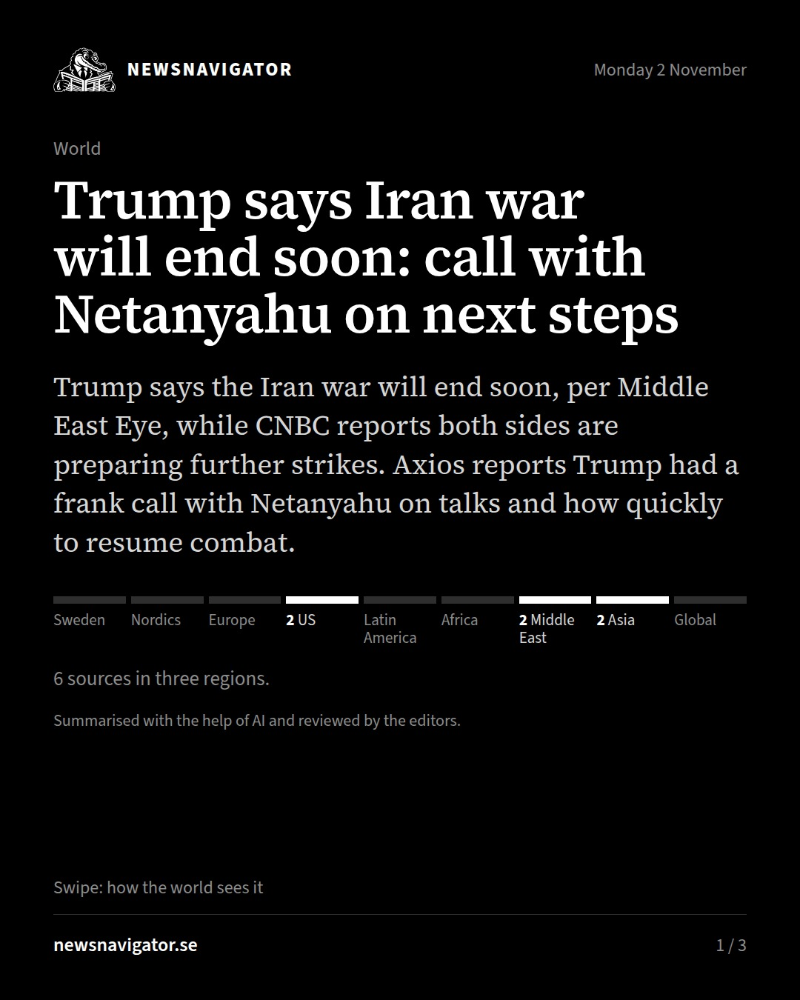
#1 · varlden · 6 källor · 2026-11-02
Trump says Iran war will end soon: call with Netanyahu on next steps
Trump says the Iran war will end soon, per Middle East Eye, while CNBC reports both sides are preparing further strikes. Axios reports Trump had a frank call with Netanyahu on talks and how quickly to resume combat.
Caption
Trump says Iran war will end soon: call with Netanyahu on next steps
Trump says the Iran war will end soon, per Middle East Eye, while CNBC reports both sides are preparing further strikes. Axios reports Trump had a frank call with Netanyahu on talks and how quickly to resume combat.
How the world sees it: US outlet CNBC highlights reports that both sides are preparing additional military strikes after the US midterm elections, and Rubio's remarks that Trump wants to end the war peacefully. US outlet Axios highlights the call between Trump and Netanyahu and Netanyahu's pressure on Trump. Qatar's Al Jazeera highlights that the IRGC says two tankers hit mines in the Strait of Hormuz, and Trump's call on Iran to make a deal. UK outlet Middle East Eye highlights Trump's statement that the war will end soon, either through a deal or by ending it. Singapore's The Straits Times highlights Trump's willingness to let negotiations play out. India's The Hindu highlights the tone of the call, based on Israeli and American sources cited by Axios.
Sources differ: The sources describe Trump's position differently. The Straits Times reports that Trump was eager to let negotiations with Iran play out. Axios reports, citing its sources, that Netanyahu is pressing Trump to strike Iran immediately. The Hindu, citing Axios, reports that an Israeli source described the call as tough while an American source described it as direct.
Sources: CNBC, Al Jazeera, Middle East Eye, The Straits Times, The Hindu, Axios
Full story with all links: https://newsnavigator.se/en/n/2b179dc1cb/
Summarised with the help of AI and reviewed by the editors. We deliver the news. What you do with it is up to you.
#news #newsnavigator #worldnews #global #context #sources
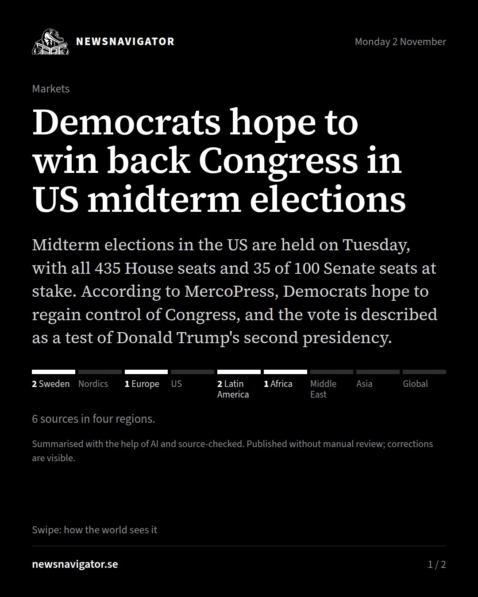
#2 · marknader · 7 källor · 2026-11-01
Democrats seek to regain control of Congress in US midterm elections
According to MercoPress, the US midterm elections take place on Tuesday, and the Democrats hope to regain control of Congress. All 435 House seats and 35 of the 100 Senate seats are at stake.
Caption
Democrats seek to regain control of Congress in US midterm elections
According to MercoPress, the US midterm elections take place on Tuesday, and the Democrats hope to regain control of Congress. All 435 House seats and 35 of the 100 Senate seats are at stake.
How the world sees it: The sources highlight different aspects of the election. MercoPress (Uruguay) describes the vote as a test of Donald Trump's second presidency. Al Jazeera (Qatar) highlights a record number of early votes. The Rio Times (Brazil) highlights opinion polls and prediction markets, which according to the article favour the Democrats in the House. El Tiempo (Colombia) highlights Latino voters, where according to the lead text the Democrats lead by 30 points among Hispanics. Sveriges Radio Ekot (Sweden) highlights the city of Youngstown, Ohio. Financial Times (UK) highlights bond investors who are staying out of the election. Dagens Industri (Sweden) states in its headline that one issue is the most important in the US election, but the headline does not say which issue.
Sources: MercoPress, Al Jazeera, The Rio Times, Sveriges Radio Ekot, El Tiempo, Dagens industri, Financial Times
Full story with all links: https://newsnavigator.se/en/n/6ea351f85d/
Summarised with the help of AI and reviewed by the editors. We deliver the news. What you do with it is up to you.
#news #newsnavigator #markets #economy #context #sources
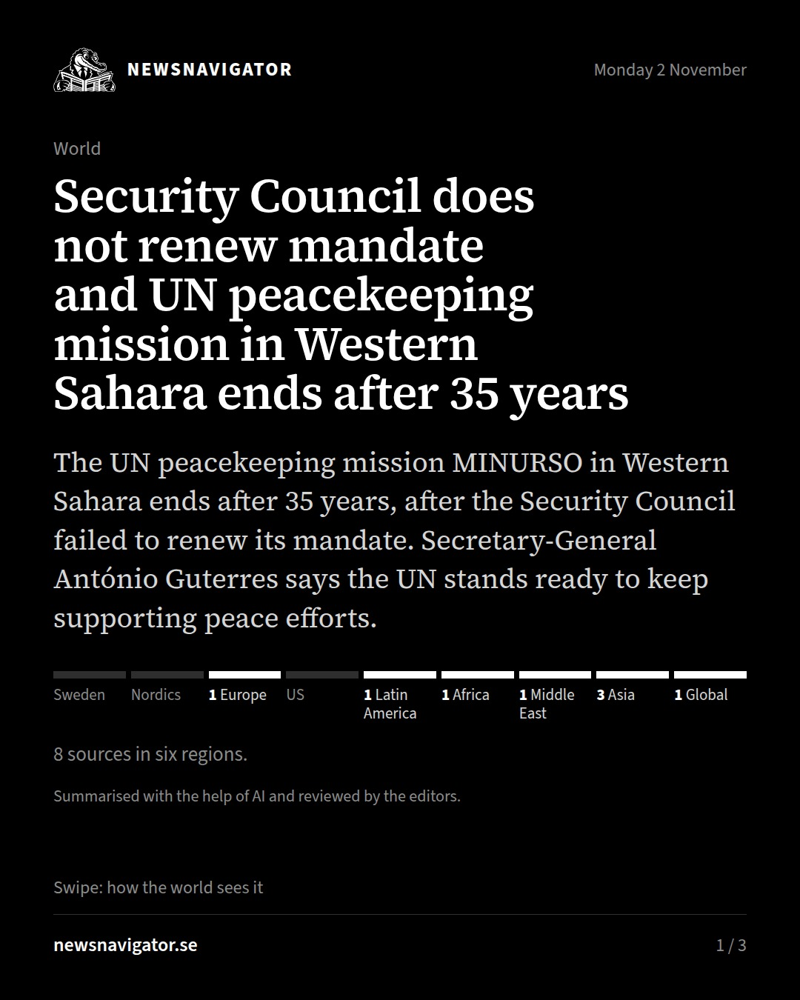
#3 · varlden · 8 källor · 2026-11-02
Security Council does not renew mandate and UN peacekeeping mission in Western Sahara ends after 35 years
The UN peacekeeping mission MINURSO in Western Sahara ends after 35 years, after the Security Council failed to renew its mandate. Secretary-General António Guterres says the UN stands ready to keep supporting peace efforts.
Caption
Security Council does not renew mandate and UN peacekeeping mission in Western Sahara ends after 35 years
The UN peacekeeping mission MINURSO in Western Sahara ends after 35 years, after the Security Council failed to renew its mandate. Secretary-General António Guterres says the UN stands ready to keep supporting peace efforts.
How the world sees it: The headlines highlight different things. UN News (UN) highlights the UN's readiness to keep supporting a political solution. Al Jazeera (Qatar) highlights security risks. El País (Spain) highlights the risk of escalation and that the mission did not fulfil its task of organising a referendum. Hindustan Times (India) highlights the US-Russia standoff as the background to the decision.
Sources differ: The sources differ in how they describe the Polisario Front's reaction. France 24 reports that the movement called the decision unacceptable, while The Straits Times writes that it expressed concern.
Sources: UN News, Daily Maverick, Al Jazeera, France 24, The Straits Times, El País América, Hindustan Times, The Hindu
Full story with all links: https://newsnavigator.se/en/n/29578425ec/
Summarised with the help of AI and reviewed by the editors. We deliver the news. What you do with it is up to you.
#news #newsnavigator #worldnews #global #context #sources
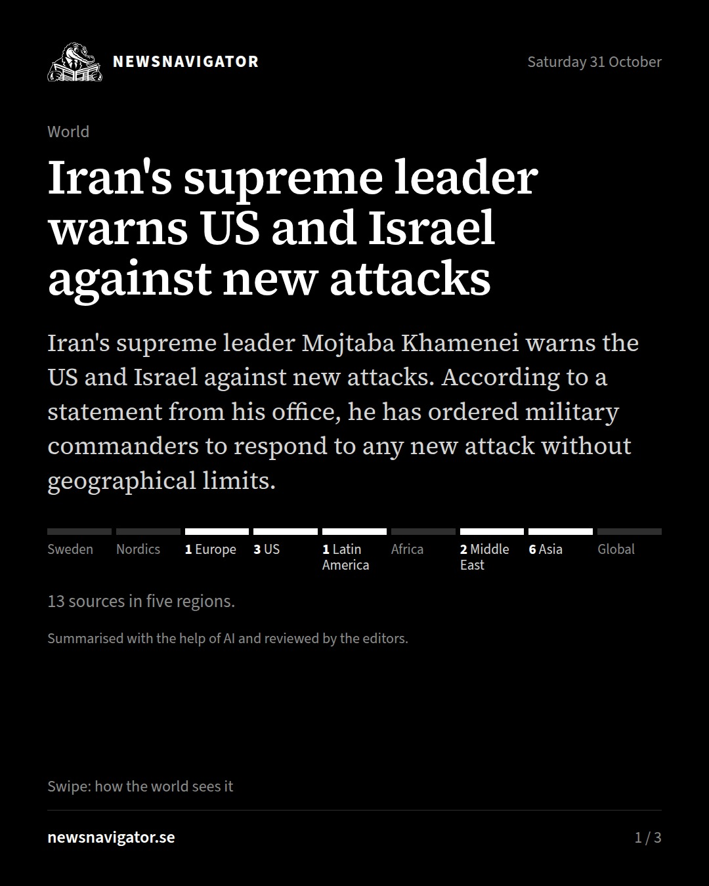
#4 · varlden · 13 källor · 2026-10-31
Iran's supreme leader warns US and Israel against new attacks
Iran's supreme leader Mojtaba Khamenei warns the US and Israel against new attacks. According to a statement from his office, he has ordered military commanders to respond to any new attack without geographical limits.
Caption
Iran's supreme leader warns US and Israel against new attacks
Iran's supreme leader Mojtaba Khamenei warns the US and Israel against new attacks. According to a statement from his office, he has ordered military commanders to respond to any new attack without geographical limits.
How the world sees it: American outlets (Washington Examiner, Axios and The Hill) mainly highlight Khamenei and his threat of a response to any possible US attack. Iranian state media (Tehran Times) instead headline the army spokesman's warning to the US and the possibility that a renewed war could widen geographically.
Sources differ: The Hill reports that Khamenei issued his warning on Friday, while several other sources date the statement to Saturday. Washington Examiner writes that Trump has 'teased' a renewed conflict after the midterms, while The Hill refers to reported US plans to resume strikes after the election.
Sources: France 24, Washington Examiner, El Tiempo, The Hill, Al-Monitor, Axios, South China Morning Post, The Hindu and 5 more
Full story with all links: https://newsnavigator.se/en/n/2369ee1ad5/
Summarised with the help of AI and reviewed by the editors. We deliver the news. What you do with it is up to you.
#news #newsnavigator #worldnews #global #context #sources
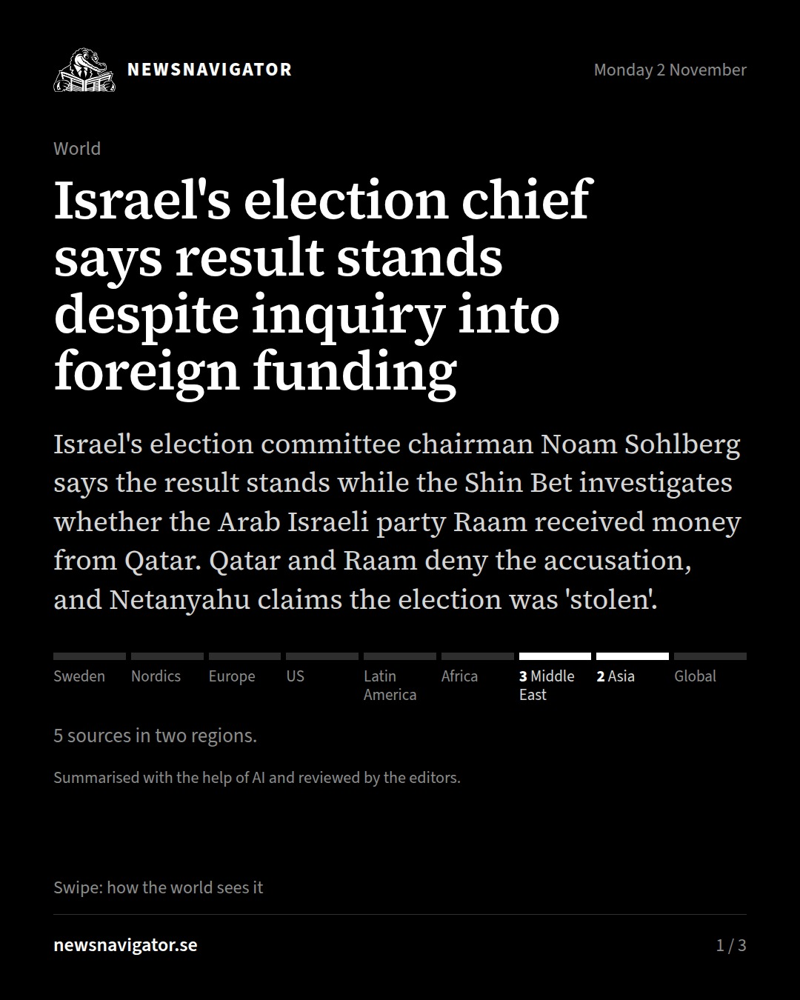
#5 · varlden · 5 källor · 2026-11-02
Israel's election chief says result stands despite inquiry into foreign funding
Israel's election committee chairman Noam Sohlberg says the result stands while the Shin Bet investigates whether the Arab Israeli party Raam received money from Qatar. Qatar and Raam deny the accusation, and Netanyahu claims the election was 'stolen'.
Caption
Israel's election chief says result stands despite inquiry into foreign funding
Israel's election committee chairman Noam Sohlberg says the result stands while the Shin Bet investigates whether the Arab Israeli party Raam received money from Qatar. Qatar and Raam deny the accusation, and Netanyahu claims the election was 'stolen'.
How the world sees it: The headlines of Al Jazeera (Qatar) and Middle East Eye (UK) highlight Netanyahu's claim that the election was 'stolen'. The headlines of The Straits Times (Singapore), The Hindu (India) and Al-Monitor (US) highlight the election committee's statement that the result stands.
Sources differ: According to the headlines of Al Jazeera and Middle East Eye, Netanyahu claims the election was 'stolen'. The election committee says the result stands even if the foreign interference claims prove true.
Sources: Al Jazeera, The Straits Times, The Hindu, Al-Monitor, Middle East Eye
Full story with all links: https://newsnavigator.se/en/n/f87090517d/
Summarised with the help of AI and reviewed by the editors. We deliver the news. What you do with it is up to you.
#news #newsnavigator #worldnews #global #context #sources
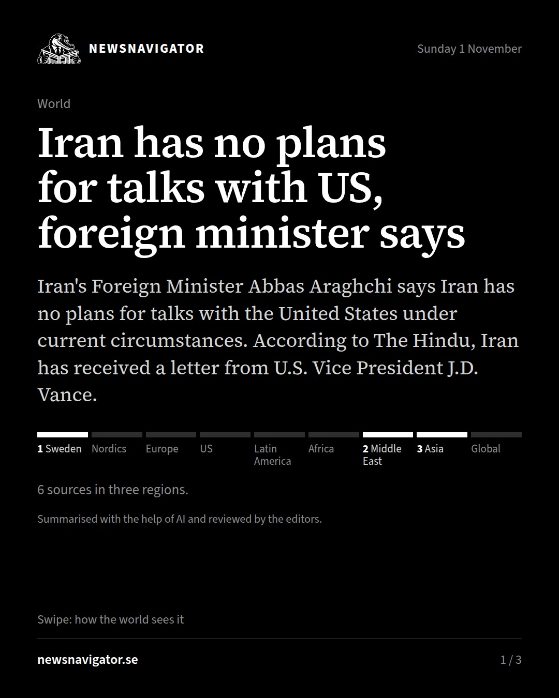
#6 · varlden · 6 källor · 2026-11-01
Iran has no plans for talks with US, foreign minister says
Iran's Foreign Minister Abbas Araghchi says Iran has no plans for talks with the United States under current circumstances. According to The Hindu, Iran has received a letter from U.S. Vice President J.D. Vance.
Caption
Iran has no plans for talks with US, foreign minister says
Iran's Foreign Minister Abbas Araghchi says Iran has no plans for talks with the United States under current circumstances. According to The Hindu, Iran has received a letter from U.S. Vice President J.D. Vance.
How the world sees it: The Hindu (India), Dagens industri (Sweden) and Tehran Times (Iranian state media) highlight that Iran has no plans for talks with the US. CGTN (Chinese state media) instead highlights talks between Iran and Qatar and that Tehran is weighing a US diplomatic overture. The Straits Times and Al-Monitor (US) carry headlines in the same feed about Egypt's foreign minister's concern over escalation in the US-Iran war.
Sources differ: CGTN (Chinese state media) headlines that Iran and Qatar are holding talks while Tehran weighs a US diplomatic overture. The Hindu, Dagens industri and Tehran Times report instead that Iran has no plans for talks with the US. Tehran Times writes that direct or indirect negotiations will only be considered after Washington accepts Iran's conditions.
Sources: The Hindu, Al-Monitor, The Straits Times, Dagens industri, CGTN (state-controlled), Tehran Times (state-controlled)
Full story with all links: https://newsnavigator.se/en/n/27ba45aba2/
Summarised with the help of AI and reviewed by the editors. We deliver the news. What you do with it is up to you.
#news #newsnavigator #worldnews #global #context #sources
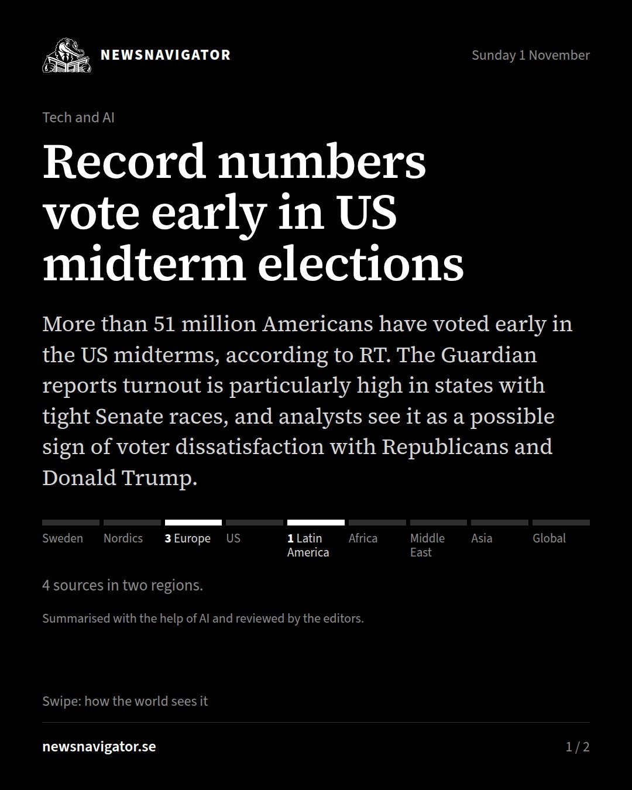
#7 · tech · 4 källor · 2026-11-01
Record numbers vote early in US midterm elections
More than 51 million Americans have voted early in the US midterms, according to RT. The Guardian reports turnout is particularly high in states with tight Senate races, and analysts see it as a possible sign of voter dissatisfaction with Republicans and Donald Trump.
Caption
Record numbers vote early in US midterm elections
More than 51 million Americans have voted early in the US midterms, according to RT. The Guardian reports turnout is particularly high in states with tight Senate races, and analysts see it as a possible sign of voter dissatisfaction with Republicans and Donald Trump.
How the world sees it: The British outlet The Guardian highlights that turnout is particularly high in states with tight Senate races and that analysts see it as a possible sign of dissatisfaction with Republicans and Donald Trump. The Russian outlet RT, a state-controlled medium, highlights that more than 51 million Americans have voted early and that Republicans are fighting to retain control of Congress. The Spanish outlet El País instead highlights a first-time voter who used an AI chatbot to get informed about the election, and experts who warn that the data is not fully reliable.
Sources: The Guardian, El País (English), El País América, RT (state-controlled)
Full story with all links: https://newsnavigator.se/en/n/9088ddf61e/
Summarised with the help of AI and reviewed by the editors. We deliver the news. What you do with it is up to you.
#news #newsnavigator #tech #ai #context #sources
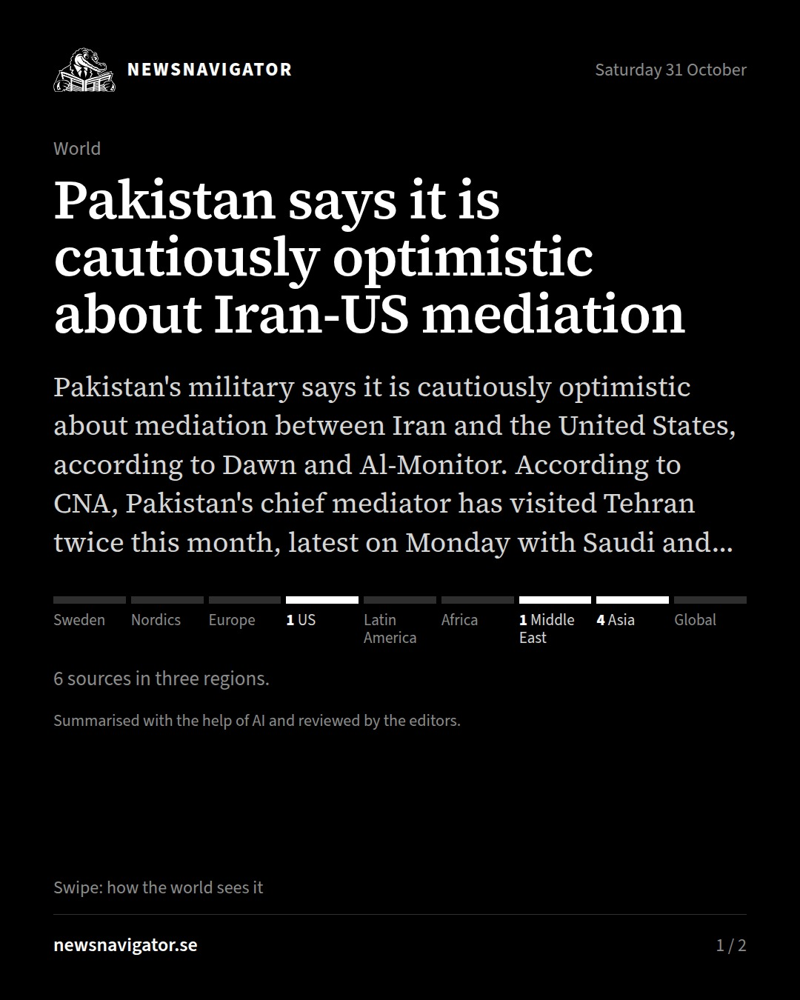
#8 · varlden · 6 källor · 2026-10-31
Pakistan says it is cautiously optimistic about Iran-US mediation
Pakistan's military says it is cautiously optimistic about mediation between Iran and the United States, according to Dawn and Al-Monitor. According to CNA, Pakistan's chief mediator has visited Tehran twice this month, latest on Monday with Saudi and Turkish officials.
Caption
Pakistan says it is cautiously optimistic about Iran-US mediation
Pakistan's military says it is cautiously optimistic about mediation between Iran and the United States, according to Dawn and Al-Monitor. According to CNA, Pakistan's chief mediator has visited Tehran twice this month, latest on Monday with Saudi and Turkish officials.
How the world sees it: The headlines about Pakistan's mediation are nearly identical in the three sources from Singapore (CNA), the United States (Al-Monitor) and Pakistan (Dawn). CNA and Al-Monitor refer to Pakistan's military, while Dawn highlights that the statement came from the military's spokesman (DG ISPR).
Sources: CNA, Axios, Al-Monitor, Dawn, Hindustan Times, CGTN (state-controlled)
Full story with all links: https://newsnavigator.se/en/n/81455c030a/
Summarised with the help of AI and reviewed by the editors. We deliver the news. What you do with it is up to you.
#news #newsnavigator #worldnews #global #context #sources
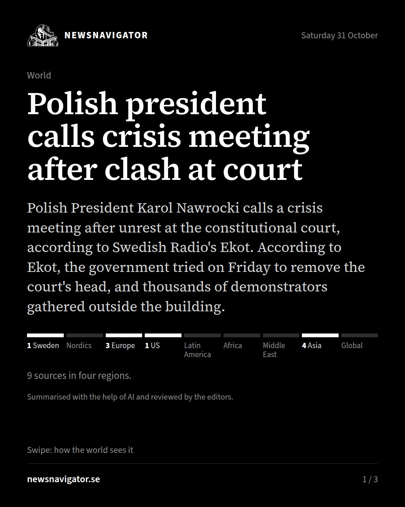
#9 · varlden · 12 källor · 2026-11-01
Polish president calls crisis talks in dispute over constitutional court
Polish President Karol Nawrocki has called crisis talks over the dispute about the Constitutional Tribunal. According to Sveriges Radio's Ekot, the government tried on Friday to remove the court's head, and thousands of protesters gathered outside the court building.
Caption
Polish president calls crisis talks in dispute over constitutional court
Polish President Karol Nawrocki has called crisis talks over the dispute about the Constitutional Tribunal. According to Sveriges Radio's Ekot, the government tried on Friday to remove the court's head, and thousands of protesters gathered outside the court building.
How the world sees it: The headlines highlight different parts of the events. Notes from Poland (Poland) highlights a physical confrontation between the president and judges at the court doors. Euractiv and Politico Europe highlight crisis talks and the president pushing past protesters, respectively. Le Monde (France) highlights a dramatic showdown at the court. Hindustan Times (India) highlights a video of the president confronting the court's 'head', and The Hindu highlights an expert's view on how the crisis could affect Tusk and Nawrocki ahead of the 2027 polls. The Straits Times (Singapore) highlights Tusk's assurance of support for the tribunal. Al Jazeera (Qatar) highlights that neither side appears to back down. RT, a state-controlled outlet, highlights the president storming into a besieged court and the tribunal's accusation of a coup against Tusk.
Sources differ: Sources differ on what happened at the court and how it should be interpreted. The Straits Times reports that President Karol Nawrocki accused Tusk of a forced takeover of the court, and that Tusk sought to assure that the tribunal will operate in line with the law. RT, a state-controlled outlet, reports that the tribunal accused Tusk of a judicial 'coup d'etat'. According to Ekot, the government tried to remove the court's head. Hindustan Times calls Anna Korwin-Piotrowska the Tusk-backed 'head of court'. Notes from Poland describes a physical confrontation with judges at the court doors, while Politico Europe reports that Nawrocki pushed his way past protesters.
Sources: Al Jazeera, The Hindu, The Straits Times, Notes from Poland, Politico Europe, Euractiv, Sveriges Radio Ekot, Hindustan Times and 4 more
Full story with all links: https://newsnavigator.se/en/n/e4102bbb96/
Summarised with the help of AI and reviewed by the editors. We deliv
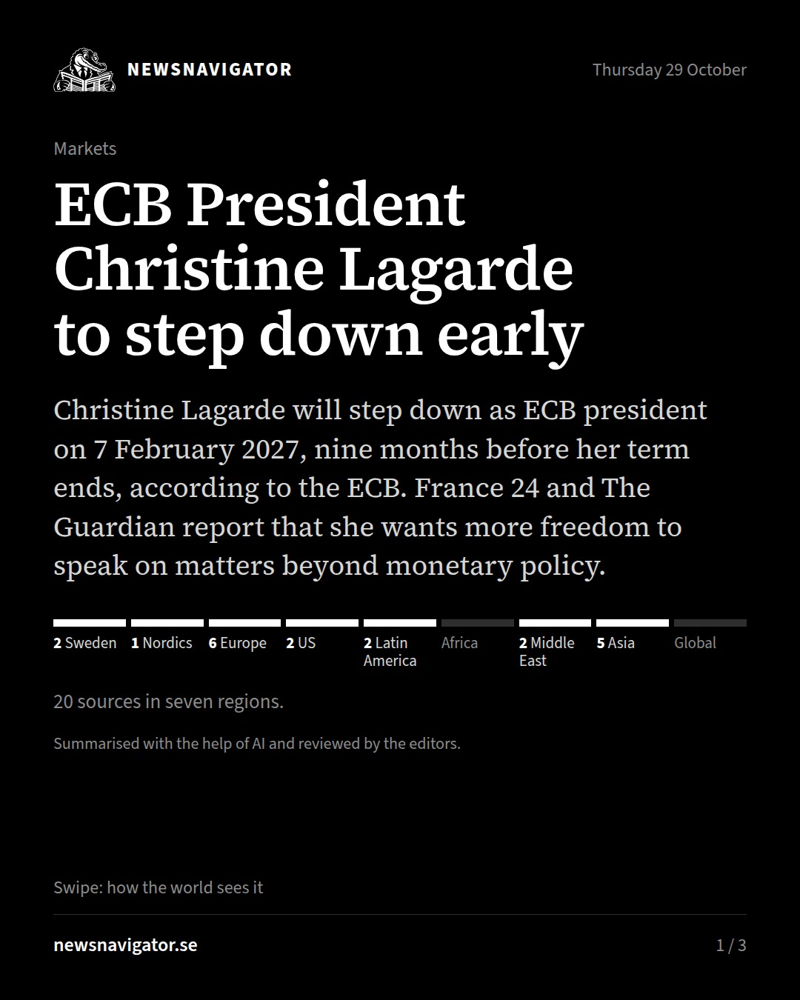
#10 · marknader · 20 källor · 2026-10-29
ECB President Christine Lagarde to step down early
Christine Lagarde will step down as ECB president on 7 February 2027, nine months before her term ends, according to the ECB. France 24 and The Guardian report that she wants more freedom to speak on matters beyond monetary policy.
Caption
ECB President Christine Lagarde to step down early
Christine Lagarde will step down as ECB president on 7 February 2027, nine months before her term ends, according to the ECB. France 24 and The Guardian report that she wants more freedom to speak on matters beyond monetary policy.
How the world sees it: The headlines highlight different things. French and British sources (France 24, The Guardian) highlight Lagarde's own reasons for wanting to speak more freely. South China Morning Post, The Japan Times and Rappler highlight that the resignation comes amid mounting challenges for Europe, and The Japan Times mentions inflation risks linked to an oil shock. The Straits Times highlights Lagarde's background as an outsider who led the ECB her way. The National, a state-controlled media outlet from the United Arab Emirates, highlights that the resignation comes after months of speculation. The American outlet CNBC highlights the politics behind the exit and who could replace her.
Sources differ: The sources give different reasons for the resignation. France 24 and The Guardian report her own explanation that she wants more freedom to speak out on issues beyond monetary policy. Rappler, citing a source with direct knowledge of the matter, says she resigned to weigh in on political matters in France and globally. France 24 writes that the move will fuel speculation about her future plans ahead of the presidential election in France.
Sources: Europeiska centralbanken, France 24, Al Jazeera, The Guardian, CNBC, MercoPress, DR Nyheder, South China Morning Post and 12 more
Full story with all links: https://newsnavigator.se/en/n/dfd6f755fa/
Summarised with the help of AI and reviewed by the editors. We deliver the news. What you do with it is up to you.
#news #newsnavigator #markets #economy #context #sources
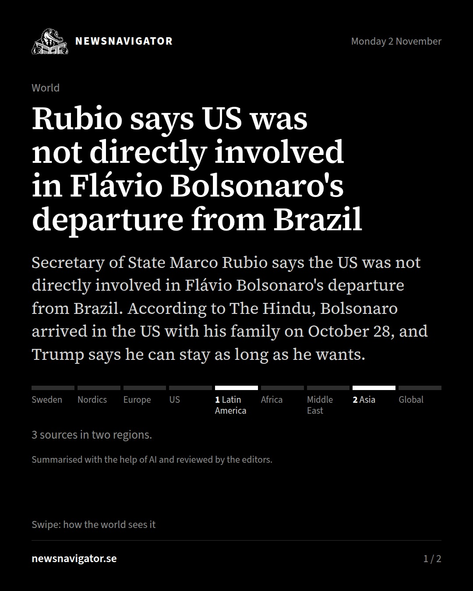
#11 · varlden · 3 källor · 2026-11-02
Rubio says US was not directly involved in Flávio Bolsonaro's departure from Brazil
Secretary of State Marco Rubio says the US was not directly involved in Flávio Bolsonaro's departure from Brazil. According to The Hindu, Bolsonaro arrived in the US with his family on October 28, and Trump says he can stay as long as he wants.
Caption
Rubio says US was not directly involved in Flávio Bolsonaro's departure from Brazil
Secretary of State Marco Rubio says the US was not directly involved in Flávio Bolsonaro's departure from Brazil. According to The Hindu, Bolsonaro arrived in the US with his family on October 28, and Trump says he can stay as long as he wants.
How the world sees it: The Buenos Aires Times highlights in its headline Rubio's statement and, in its lead, Trump's remark that Bolsonaro can stay. Hindustan Times highlights in its headline Rubio's denial of any US role in the departure. The Hindu highlights in its lead the date of the runoff vote and the date of Bolsonaro's arrival in the US.
Sources: Buenos Aires Times, Hindustan Times, The Hindu
Full story with all links: https://newsnavigator.se/en/n/711035ff58/
Summarised with the help of AI and reviewed by the editors. We deliver the news. What you do with it is up to you.
#news #newsnavigator #worldnews #global #context #sources
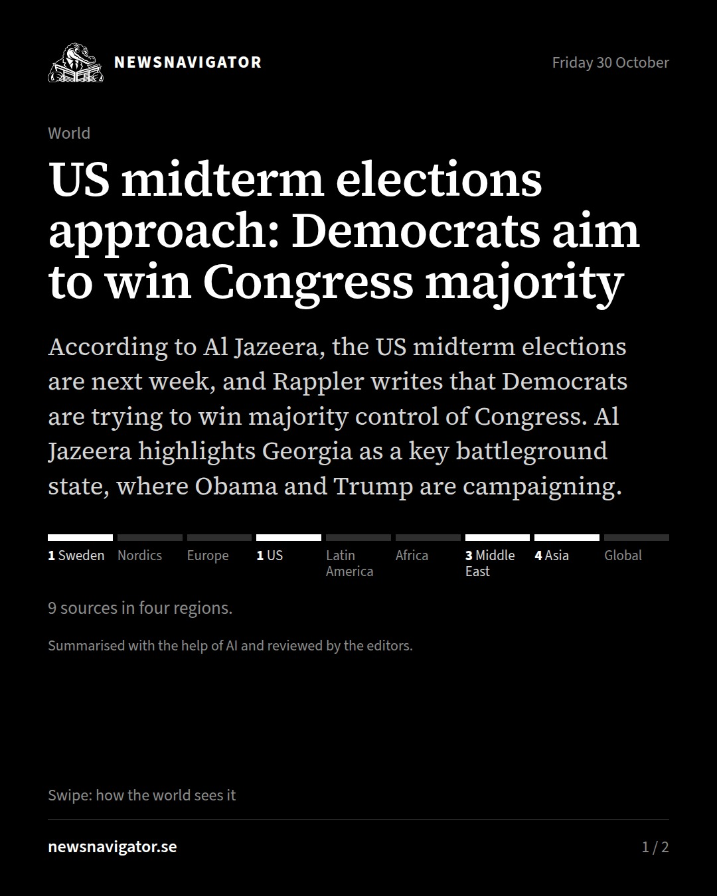
#12 · varlden · 9 källor · 2026-10-30
US midterm elections approach: Democrats aim to win Congress majority
According to Al Jazeera, the US midterm elections are next week, and Rappler writes that Democrats are trying to win majority control of Congress. Al Jazeera highlights Georgia as a key battleground state, where Obama and Trump are campaigning.
Caption
US midterm elections approach: Democrats aim to win Congress majority
According to Al Jazeera, the US midterm elections are next week, and Rappler writes that Democrats are trying to win majority control of Congress. Al Jazeera highlights Georgia as a key battleground state, where Obama and Trump are campaigning.
How the world sees it: The headlines highlight different parts of the midterm elections. Al Jazeera (Qatar) highlights Georgia as a key state where Obama and Trump are campaigning. Rappler (Philippines) highlights what is at stake and Democrats' attempt to win majority control of Congress. The Straits Times (Singapore) highlights possible Trump interference in the elections and the White House's statement that it is protecting election security. The National (UAE, state-controlled media) asks what happens in the elections and why they matter. CGTN (China, Chinese state media) has an explanatory headline about the elections. South China Morning Post (Hong Kong) mentions the elections in a headline together with Xi Jinping and Lula. Dagens Nyheter (Sweden) links the elections to cheesecake in its headline. The New York Times (USA) has a headline that invites readers to ask questions about the elections.
Sources: Al Jazeera, Rappler, Al-Monitor, South China Morning Post, The Straits Times, The New York Times, Dagens Nyheter, The National (state-controlled) and 1 more
Full story with all links: https://newsnavigator.se/en/n/c4ce360f79/
Summarised with the help of AI and reviewed by the editors. We deliver the news. What you do with it is up to you.
#news #newsnavigator #worldnews #global #context #sources
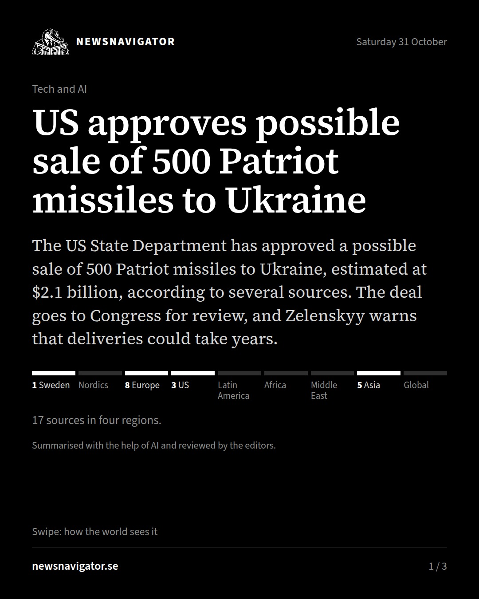
#13 · tech · 17 källor · 2026-10-31
US approves possible sale of 500 Patriot missiles to Ukraine
The US State Department has approved a possible sale of 500 Patriot missiles to Ukraine, estimated at $2.1 billion, according to several sources. The deal goes to Congress for review, and Zelenskyy warns that deliveries could take years.
Caption
US approves possible sale of 500 Patriot missiles to Ukraine
The US State Department has approved a possible sale of 500 Patriot missiles to Ukraine, estimated at $2.1 billion, according to several sources. The deal goes to Congress for review, and Zelenskyy warns that deliveries could take years.
How the world sees it: European headlines (Politico, Euractiv, France 24) mainly highlight the approval and Zelenskyy's call for or warning about deliveries. Dawn from Pakistan uses the same headline as Euractiv. Hindustan Times (India) highlights Zelenskyy flagging delays, and The Japan Times (Japan) highlights complaints from Ukrainian authorities that interceptor supplies were dwindling. The Straits Times (Singapore) highlights that Ukraine had waited almost a month for the sign-off. The Kyiv Independent (Ukraine) highlights Zelenskyy's warning of a years-long wait for deliveries.
Sources differ: The sources give different amounts: $2.1 billion (among others New York Post, The Guardian, Breaking Defense and Meduza), $2.6 billion (The Straits Times) and $3 billion (ABC News, Australia). On timing, Euractiv, Dawn and The Guardian cite Zelenskyy saying deliveries could take years, while Breaking Defense reports that allies will pay and gives no timeframe.
Sources: Politico Europe, The Japan Times, Hindustan Times, Euractiv, New York Post, Dawn, The Guardian, ABC News (Australien) and 9 more
Full story with all links: https://newsnavigator.se/en/n/decf886272/
Summarised with the help of AI and reviewed by the editors. We deliver the news. What you do with it is up to you.
#news #newsnavigator #tech #ai #context #sources
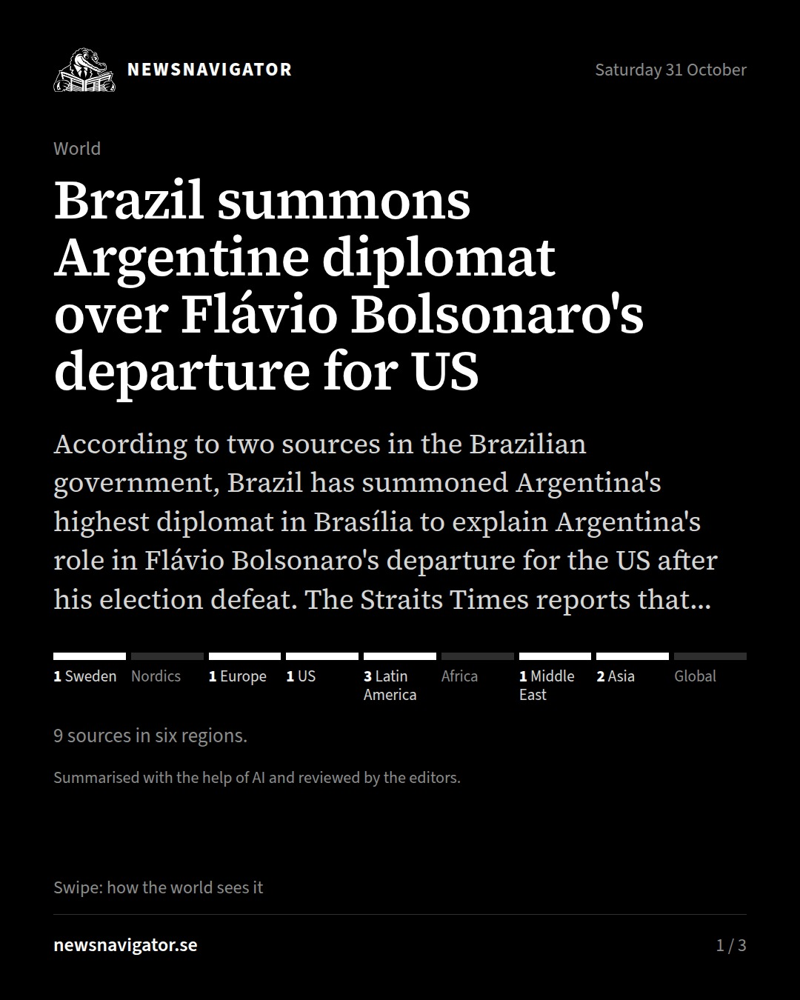
#14 · varlden · 9 källor · 2026-10-31
Brazil summons Argentine diplomat over Flávio Bolsonaro's departure for US
According to two sources in the Brazilian government, Brazil has summoned Argentina's highest diplomat in Brasília to explain Argentina's role in Flávio Bolsonaro's departure for the US after his election defeat. The Straits Times reports that Argentina denies the summoning.
Caption
Brazil summons Argentine diplomat over Flávio Bolsonaro's departure for US
According to two sources in the Brazilian government, Brazil has summoned Argentina's highest diplomat in Brasília to explain Argentina's role in Flávio Bolsonaro's departure for the US after his election defeat. The Straits Times reports that Argentina denies the summoning.
How the world sees it: The headlines highlight different parts of the event. Al Jazeera (Qatar), The Straits Times (Singapore), El País (Spain), El Tiempo (Colombia) and Buenos Aires Times (Argentina) highlight the summoning of the Argentine diplomat and the diplomatic relationship between Brazil and Argentina. Buenos Aires Times writes that Brasília seeks explanations from the Milei government, and El País writes that Lula's government wants to move on. El Tiempo highlights that Bolsonaro left after a judge ordered him to hand over his passport. Hindustan Times (India), Dagens Nyheter (Sweden), The New York Times (USA) and El País in English highlight Trump's role. El País in English writes that the governments of Argentina and Ecuador collaborated to get Bolsonaro out of Brazil.
Sources differ: The Straits Times reports that Argentina denies the summoning. The sources use different descriptions for the Argentine diplomat: "highest diplomat" (Straits Times) and "encargada de negocios" (El Tiempo, chargé d'affaires). On Trump's role the wording differs: Hindustan Times refers to a report that Trump arranged a temporary stay, Dagens Nyheter writes according to reports that Trump was behind the trip, and the New York Times headline states that Trump and his aides helped Bolsonaro reach the US.
Sources: Al Jazeera, The Straits Times, El País América, Buenos Aires Times, El Tiempo, Hindustan Times, El País (English), Dagens Nyheter and 1 more
Full story with all links: https://newsnavigator.se/en/n/832675689d/
Summarised with the help of AI and reviewed by the editors. We deliver the news. What you do with it is up to you.
#news #newsnavigator #worldnews #global #context #sources
#15 · varlden · 5 källor · 2026-11-01
Binance replaces 90% of assets stolen in $6.3 billion hack
According to several sources, Binance has replenished 90 percent of the assets stolen in a hack of its platform worth $6.3 billion. The Verge reports that the company's CEO said the firm also plans to cover the remaining 10 percent.
Caption
Binance replaces 90% of assets stolen in $6.3 billion hack
According to several sources, Binance has replenished 90 percent of the assets stolen in a hack of its platform worth $6.3 billion. The Verge reports that the company's CEO said the firm also plans to cover the remaining 10 percent.
How the world sees it: The US news site The Hill highlights that Binance has recovered 90 percent of the assets. The Verge highlights that the figure comes from the company's CEO and that the firm will cover the rest. Danish DR's headline states that the exchange replaces 90 percent following the billion-dollar theft. Swedish Dagens industri highlights that 90 percent has been repaid. The National, a state-controlled outlet from the United Arab Emirates, states in its headline that Binance covers 90 percent and gives the size of the theft as $6.3 billion.
Sources: The Hill, The Verge, DR Nyheder, Dagens industri, The National (state-controlled)
Full story with all links: https://newsnavigator.se/en/n/1a7c42d73c/
Summarised with the help of AI and reviewed by the editors. We deliver the news. What you do with it is up to you.
#news #newsnavigator #worldnews #global #context #sources
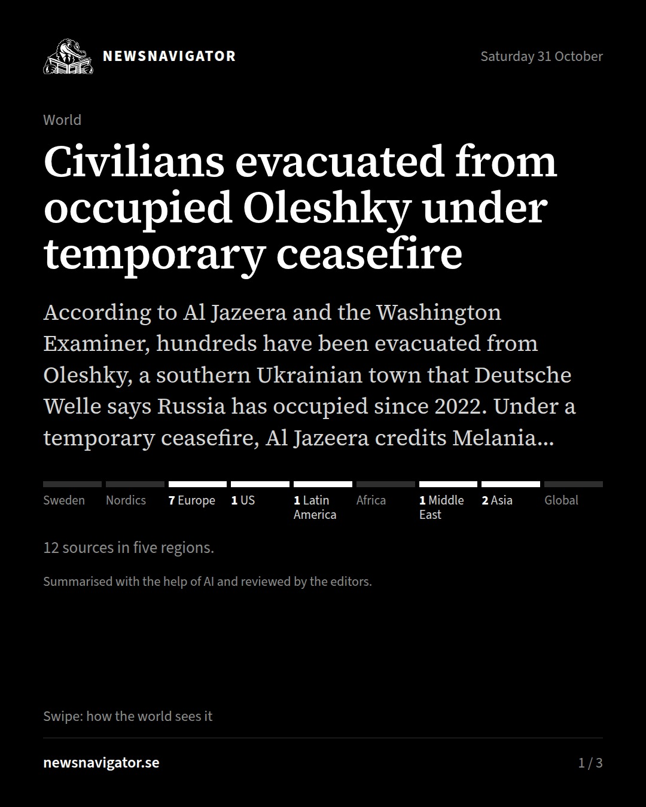
#16 · varlden · 12 källor · 2026-10-31
Civilians evacuated from occupied Oleshky under temporary ceasefire
According to Al Jazeera and the Washington Examiner, hundreds have been evacuated from Oleshky, a southern Ukrainian town that Deutsche Welle says Russia has occupied since 2022. Under a temporary ceasefire, Al Jazeera credits Melania Trump as broker, while France 24 credits the United States.
Caption
Civilians evacuated from occupied Oleshky under temporary ceasefire
According to Al Jazeera and the Washington Examiner, hundreds have been evacuated from Oleshky, a southern Ukrainian town that Deutsche Welle says Russia has occupied since 2022. Under a temporary ceasefire, Al Jazeera credits Melania Trump as broker, while France 24 credits the United States.
How the world sees it: Headlines from different countries highlight different aspects. Al Jazeera (Qatar) and the Washington Examiner (US) put Melania Trump in their headlines. BBC (UK) asks how the ceasefire has unfolded. Kyiv Independent (Ukraine) highlights evacuation convoys splitting toward Ukraine and Russia. Meduza (Latvia) quotes Russian human rights commissioner Yana Lantratova saying the humanitarian mission is coming to an end.
Sources differ: The sources differ on where the evacuees are being taken. Kyiv Independent and France 24 report, citing David Arakhamia, that they are heading to Anapa in Russia's Krasnodar Krai. El País reports, citing the Russian ombudsman, that the convoy has reached northern Crimea. The sources also name different brokers: Al Jazeera names Melania Trump, while France 24 names the United States.
Sources: Al Jazeera, BBC World, France 24, Washington Examiner, Deutsche Welle, The Guardian, Meduza, The Straits Times and 4 more
Full story with all links: https://newsnavigator.se/en/n/d2cfc637ae/
Summarised with the help of AI and reviewed by the editors. We deliver the news. What you do with it is up to you.
#news #newsnavigator #worldnews #global #context #sources
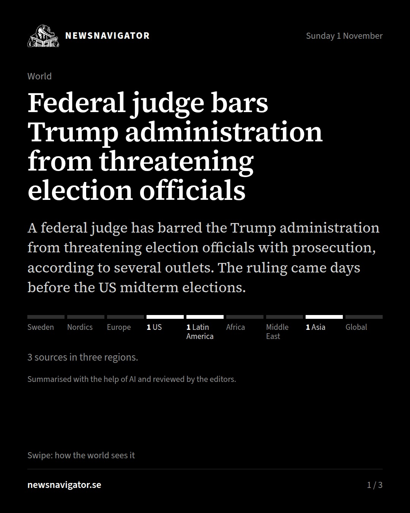
#17 · varlden · 3 källor · 2026-11-01
Federal judge bars Trump administration from threatening election officials
A federal judge has barred the Trump administration from threatening election officials with prosecution, according to several outlets. The ruling came days before the US midterm elections.
Caption
Federal judge bars Trump administration from threatening election officials
A federal judge has barred the Trump administration from threatening election officials with prosecution, according to several outlets. The ruling came days before the US midterm elections.
How the world sees it: The Rio Times (Brazil) headlines the ruling as a bar on threats against election officials over disputed ballots and highlights an Alaska Senate fight. Fox News (US) highlights that the ballots are tied to suspected noncitizens and that the ruling concerns threats of prosecution. The Straits Times (Singapore) highlights that the ruling came days before the midterm elections that will determine control of Congress.
Sources differ: The sources describe different contexts for the disputed ballots. The Rio Times links the ruling to disputed ballots in an Alaska Senate fight that is heading to court, while Fox News links the ballots to suspected noncitizens.
Sources: The Rio Times, Fox News, The Straits Times
Full story with all links: https://newsnavigator.se/en/n/55a4f5a989/
Summarised with the help of AI and reviewed by the editors. We deliver the news. What you do with it is up to you.
#news #newsnavigator #worldnews #global #context #sources
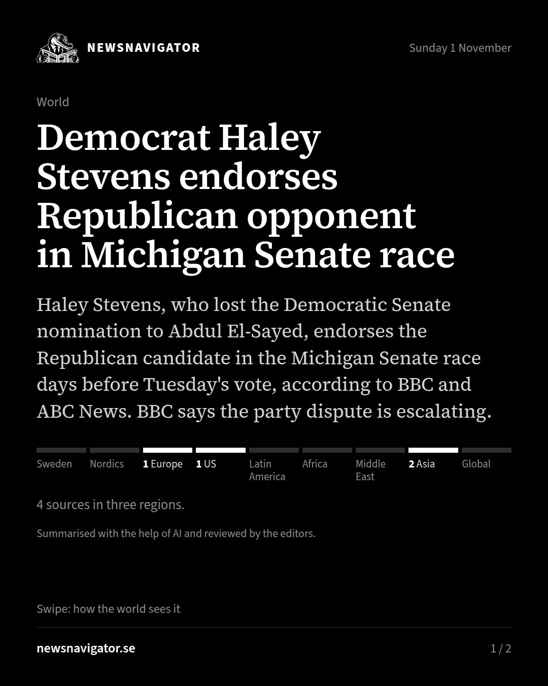
#18 · varlden · 4 källor · 2026-11-01
Democrat Haley Stevens endorses Republican opponent in Michigan Senate race
Haley Stevens, who lost the Democratic Senate nomination to Abdul El-Sayed, endorses the Republican candidate in the Michigan Senate race days before Tuesday's vote, according to BBC and ABC News. BBC says the party dispute is escalating.
Caption
Democrat Haley Stevens endorses Republican opponent in Michigan Senate race
Haley Stevens, who lost the Democratic Senate nomination to Abdul El-Sayed, endorses the Republican candidate in the Michigan Senate race days before Tuesday's vote, according to BBC and ABC News. BBC says the party dispute is escalating.
How the world sees it: British BBC and Australian ABC News both highlight Stevens' endorsement of the Republican candidate and frame it as part of an internal party dispute. The ABC News headline uses the words 'despicable betrayal', while BBC emphasizes that the dispute is escalating. Indian Hindustan Times instead highlights, in its headline, a Republican candidate in Georgia's 6th district and his view of Trump's Iran policy. American The New York Times highlights, in its headline, Trump and the Republican Party's personal attacks as the midterm campaign closes.
Sources: BBC World, ABC News (Australien), Hindustan Times, The New York Times
Full story with all links: https://newsnavigator.se/en/n/869e0a7bca/
Summarised with the help of AI and reviewed by the editors. We deliver the news. What you do with it is up to you.
#news #newsnavigator #worldnews #global #context #sources
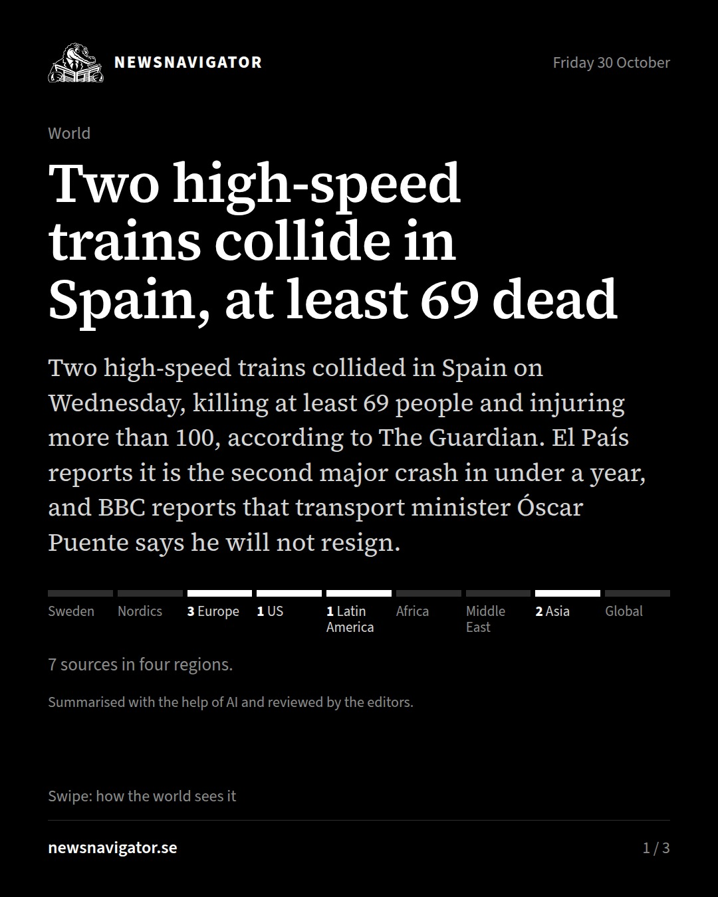
#19 · varlden · 7 källor · 2026-10-30
Two high-speed trains collide in Spain, at least 69 dead
Two high-speed trains collided in Spain on Wednesday, killing at least 69 people and injuring more than 100, according to The Guardian. El País reports it is the second major crash in under a year, and BBC reports that transport minister Óscar Puente says he will not resign.
Caption
Two high-speed trains collide in Spain, at least 69 dead
Two high-speed trains collided in Spain on Wednesday, killing at least 69 people and injuring more than 100, according to The Guardian. El País reports it is the second major crash in under a year, and BBC reports that transport minister Óscar Puente says he will not resign.
How the world sees it: British BBC highlights transport minister Óscar Puente's stated decision not to resign, while The Guardian highlights prime minister Pedro Sánchez's remarks that trust in high-speed rail has been damaged. Spanish El País highlights union criticism of working conditions at Adif's control center. Australian ABC News highlights that two Australians have not yet been confirmed safe. Indian Hindustan Times highlights that rail safety has become a campaign issue ahead of upcoming elections. American The Wall Street Journal asks why Spain repeatedly has deadly rail accidents, a headline that Hindustan Times also uses.
Sources differ: No direct contradiction in the material about the number of dead or injured. The sources differ in what they highlight, see perspektiv_en.
Sources: BBC World, El País (English), El País América, The Guardian, ABC News (Australien), Hindustan Times, The Wall Street Journal
Full story with all links: https://newsnavigator.se/en/n/42dd92172d/
Summarised with the help of AI and reviewed by the editors. We deliver the news. What you do with it is up to you.
#news #newsnavigator #worldnews #global #context #sources
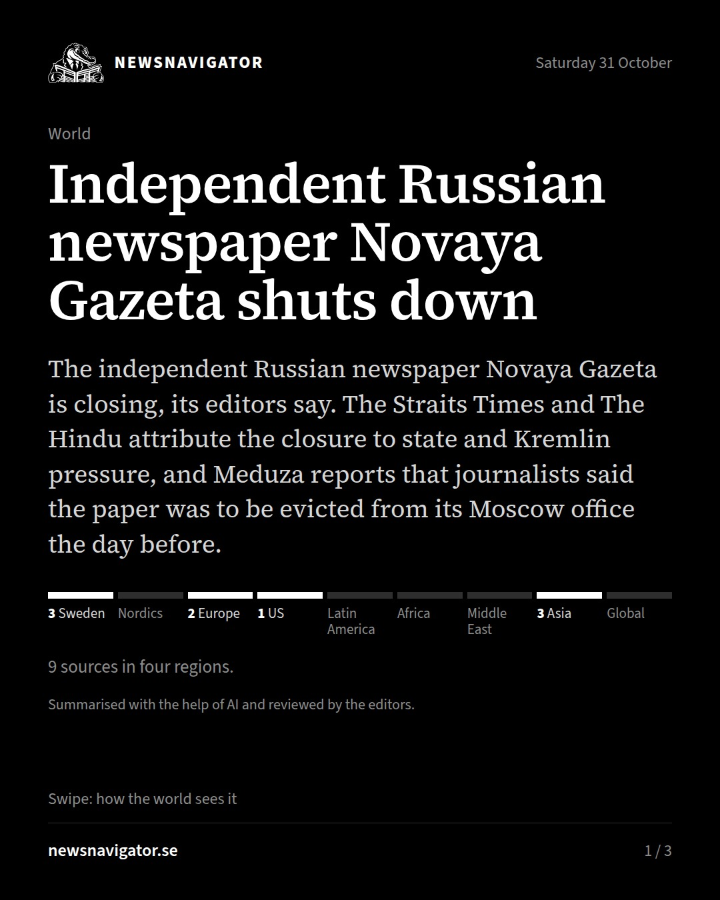
#20 · varlden · 9 källor · 2026-11-01
US warned Russia of possible attack at Moscow museum, FSB says
According to the U.S. Embassy in Moscow, there is a credible threat of a mass casualty event at the Tsaritsyno Museum Reserve on Saturday. Russia's FSB security service says it received information from the United States and is taking measures.
Caption
US warned Russia of possible attack at Moscow museum, FSB says
According to the U.S. Embassy in Moscow, there is a credible threat of a mass casualty event at the Tsaritsyno Museum Reserve on Saturday. Russia's FSB security service says it received information from the United States and is taking measures.
How the world sees it: The Russian Federal Security Service (FSB) and its statement that it received information from the United States are highlighted by The Straits Times, Meduza and The Hindu. Kyiv Independent (Ukraine) highlights the embassy's assessment of the threat as credible and its coordination with Russian authorities. Hindustan Times (India) highlights the location and the advice to Americans to take precautions. Swedish sources highlight the embassy's call to avoid Tsaritsyno and crowds.
Sources differ: The sources differ on when the threat is expected. Sveriges Radio Ekot writes that the attack could happen on Saturday, while its headline says tonight. SVT writes today. Other sources give no time. The Hindu writes that extremists had imminent plans for an attack, while Kyiv Independent and SVT emphasize that the embassy considered the threat credible.
Sources: The Hindu, Hindustan Times, Meduza, The Straits Times, The Kyiv Independent, Sveriges Radio Ekot, SVT Nyheter, Fox News and 1 more
Full story with all links: https://newsnavigator.se/en/n/f85820ead2/
Summarised with the help of AI and reviewed by the editors. We deliver the news. What you do with it is up to you.
#news #newsnavigator #worldnews #global #context #sources
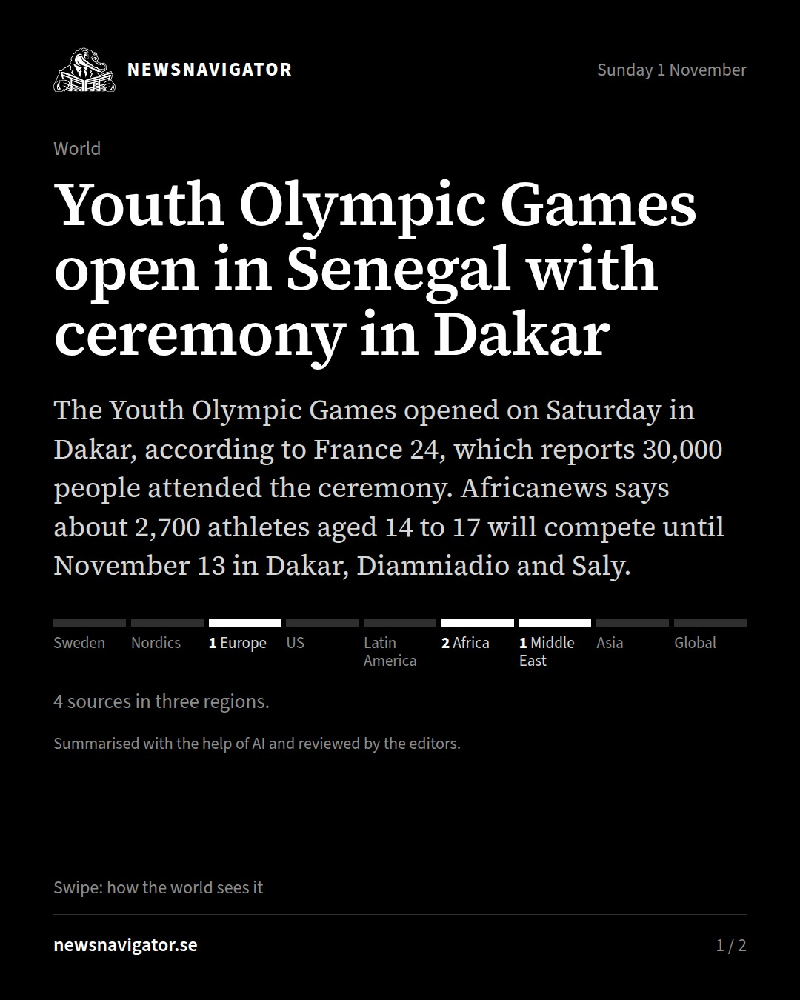
#21 · varlden · 4 källor · 2026-11-01
Youth Olympic Games open in Senegal with ceremony in Dakar
The Youth Olympic Games opened on Saturday in Dakar, according to France 24, which reports 30,000 people attended the ceremony. Africanews says about 2,700 athletes aged 14 to 17 will compete until November 13 in Dakar, Diamniadio and Saly.
Caption
Youth Olympic Games open in Senegal with ceremony in Dakar
The Youth Olympic Games opened on Saturday in Dakar, according to France 24, which reports 30,000 people attended the ceremony. Africanews says about 2,700 athletes aged 14 to 17 will compete until November 13 in Dakar, Diamniadio and Saly.
How the world sees it: France 24 (France) highlights the celebrations and that the event is the first Olympic competition held on African soil. Premium Times (Nigeria) highlights Nigeria's 19-member team and its flagbearer, sprinter Rosemary Chigozie Nwankwo. Africanews highlights the number of athletes and the host locations. Al Jazeera (Qatar) provides only a headline and an ingress that repeats it.
Sources: Al Jazeera, France 24, Premium Times, Africanews
Full story with all links: https://newsnavigator.se/en/n/ca4b21524c/
Summarised with the help of AI and reviewed by the editors. We deliver the news. What you do with it is up to you.
#news #newsnavigator #worldnews #global #context #sources
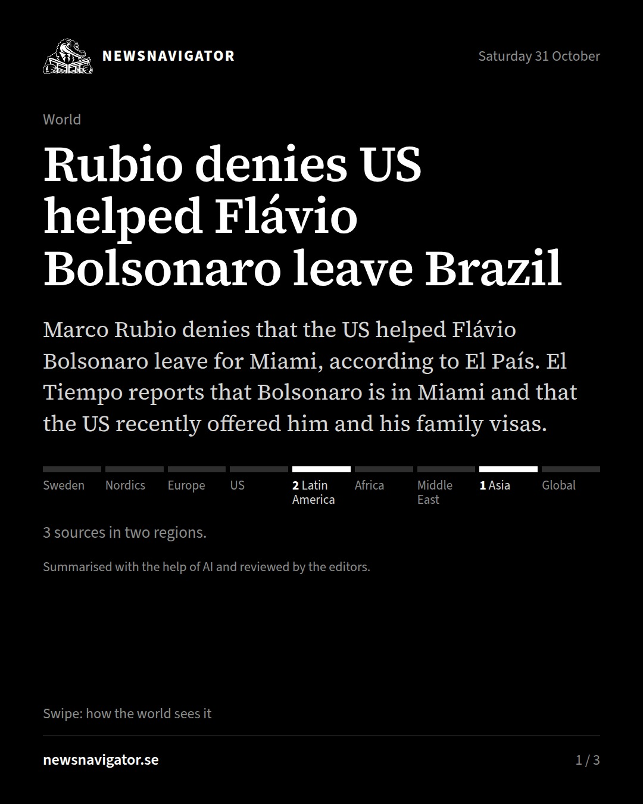
#22 · varlden · 3 källor · 2026-10-31
Rubio denies US helped Flávio Bolsonaro leave Brazil
Marco Rubio denies that the US helped Flávio Bolsonaro leave for Miami, according to El País. El Tiempo reports that Bolsonaro is in Miami and that the US recently offered him and his family visas.
Caption
Rubio denies US helped Flávio Bolsonaro leave Brazil
Marco Rubio denies that the US helped Flávio Bolsonaro leave for Miami, according to El País. El Tiempo reports that Bolsonaro is in Miami and that the US recently offered him and his family visas.
How the world sees it: Spanish and Colombian headlines focus on Rubio's denial that the US helped Bolsonaro leave Brazil. The Indian headline from Hindustan Times instead focuses on Brazil's diplomatic response and the report that Bolsonaro fled via Argentina.
Sources differ: El Tiempo reports that the US recently offered Bolsonaro and his family visas, while El País writes that Rubio denies the US facilitated the departure.
Sources: El País América, El Tiempo, Hindustan Times
Full story with all links: https://newsnavigator.se/en/n/2a6cbc115f/
Summarised with the help of AI and reviewed by the editors. We deliver the news. What you do with it is up to you.
#news #newsnavigator #worldnews #global #context #sources
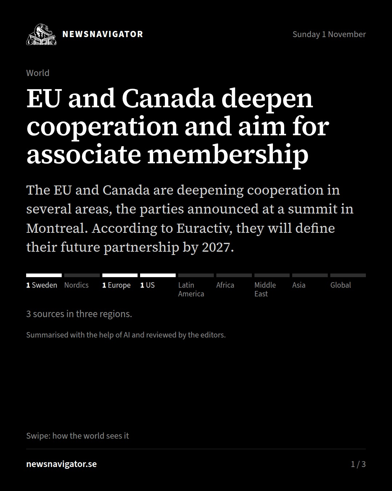
#23 · varlden · 3 källor · 2026-11-01
EU and Canada deepen cooperation and aim for associate membership
The EU and Canada are deepening cooperation in several areas, the parties announced at a summit in Montreal. According to Euractiv, they will define their future partnership by 2027.
Caption
EU and Canada deepen cooperation and aim for associate membership
The EU and Canada are deepening cooperation in several areas, the parties announced at a summit in Montreal. According to Euractiv, they will define their future partnership by 2027.
How the world sees it: SVT highlights the goal of associate membership for Canada, according to Carney. Euractiv highlights the 2027 timeframe and that political hurdles remain. The Wall Street Journal highlights the path toward the arrangement.
Sources differ: SVT writes that the goal is for Canada to become the EU's first associate member, according to Prime Minister Mark Carney. The Wall Street Journal writes that the leaders have set out a path toward an associate membership arrangement. Euractiv writes that Canada is moving closer to associate membership but that political hurdles remain.
Sources: SVT Nyheter, Euractiv, The Wall Street Journal
Full story with all links: https://newsnavigator.se/en/n/4a1d17c3a4/
Summarised with the help of AI and reviewed by the editors. We deliver the news. What you do with it is up to you.
#news #newsnavigator #worldnews #global #context #sources
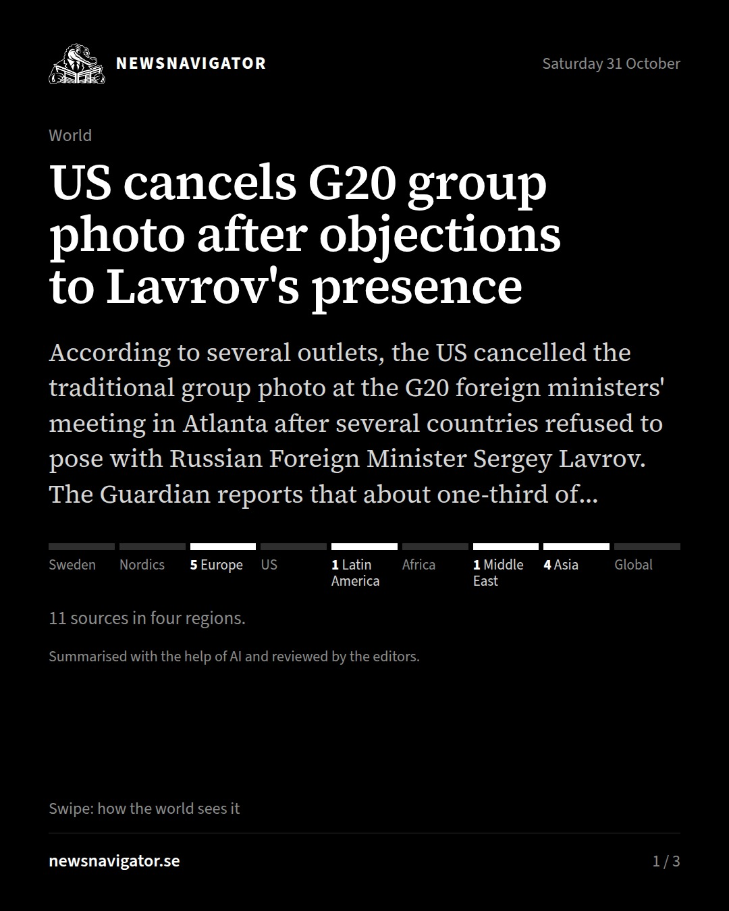
#24 · varlden · 11 källor · 2026-10-31
US cancels G20 group photo after objections to Lavrov's presence
According to several outlets, the US cancelled the traditional group photo at the G20 foreign ministers' meeting in Atlanta after several countries refused to pose with Russian Foreign Minister Sergey Lavrov. The Guardian reports that about one-third of countries threatened a boycott.
Caption
US cancels G20 group photo after objections to Lavrov's presence
According to several outlets, the US cancelled the traditional group photo at the G20 foreign ministers' meeting in Atlanta after several countries refused to pose with Russian Foreign Minister Sergey Lavrov. The Guardian reports that about one-third of countries threatened a boycott.
How the world sees it: The British BBC highlights that UK Foreign Secretary Ed Miliband confronted Lavrov and accused the Russian government of killing innocent civilians in Ukraine. Japan Times focuses on Japan's demand for the release of a Japanese national during a meeting with Lavrov. German Deutsche Welle highlights Lavrov's statement that Zelenskyy should travel to Russia if he wants talks with Putin. Singapore's The Straits Times highlights Lavrov's criticism of inviting Poland to G20 meetings. Qatar's Al Jazeera highlights the Iran war, disruption in the Strait of Hormuz and the Ukraine issue as dividing G20 members.
Sources differ: The sources differ on how many countries refused and which ones they were. The Guardian names Australia and the UK and reports that about one-third of countries threatened a boycott. Meduza refers to several ministers and Hindustan Times to several European representatives. The Kyiv Independent reports that the cancellation is alleged to have taken place and cites German Foreign Minister Johann Wadephul, according to n-tv, saying that no group photo with the Europeans and Lavrov will be taken.
Sources: The Hindu, The Japan Times, Deutsche Welle, The Guardian, The Straits Times, BBC World, Al Jazeera, Meduza and 3 more
Full story with all links: https://newsnavigator.se/en/n/2dbea39edf/
Summarised with the help of AI and reviewed by the editors. We deliver the news. What you do with it is up to you.
#news #newsnavigator #worldnews #global #context #sources
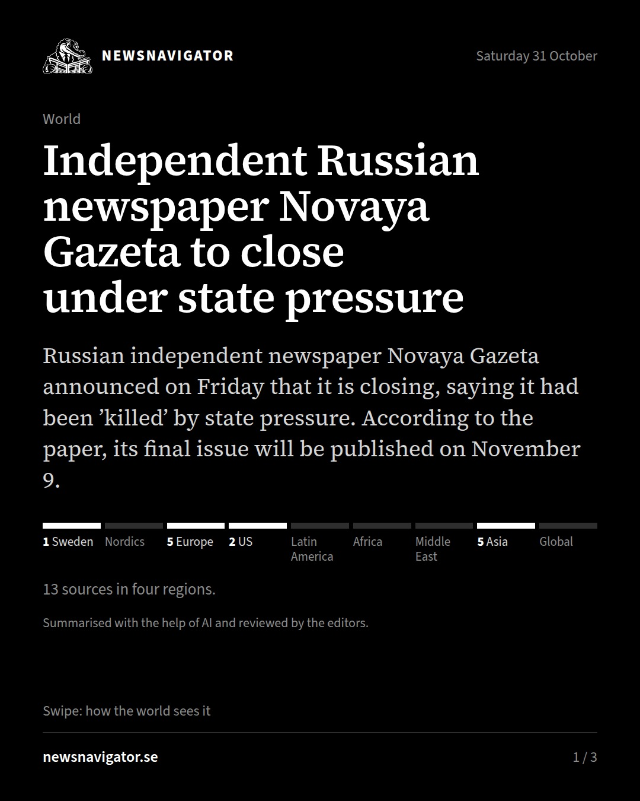
#25 · varlden · 13 källor · 2026-10-31
Independent Russian newspaper Novaya Gazeta to close under state pressure
Russian independent newspaper Novaya Gazeta announced on Friday that it is closing, saying it had been ’killed’ by state pressure. According to the paper, its final issue will be published on November 9.
Caption
Independent Russian newspaper Novaya Gazeta to close under state pressure
Russian independent newspaper Novaya Gazeta announced on Friday that it is closing, saying it had been ’killed’ by state pressure. According to the paper, its final issue will be published on November 9.
How the world sees it: The British newspaper The Guardian highlights the paper’s claim that Russian society is being ’systematically crushed’ and notes that former editor Dmitry Muratov won the Nobel Peace Prize. The Indian Hindustan Times highlights that the paper was placed on a state enemies list. The French outlet France 24 highlights that the Kremlin’s crackdown and a ban on the outlet made it impossible to continue its work. Singapore’s The Straits Times and Hong Kong’s South China Morning Post highlight the paper’s own description that it had been ’killed’ by state pressure.
Sources: The Straits Times, South China Morning Post, Washington Examiner, Meduza, The Hindu, France 24, The Guardian, Rappler and 5 more
Full story with all links: https://newsnavigator.se/en/n/5b1bdcd234/
Summarised with the help of AI and reviewed by the editors. We deliver the news. What you do with it is up to you.
#news #newsnavigator #worldnews #global #context #sources
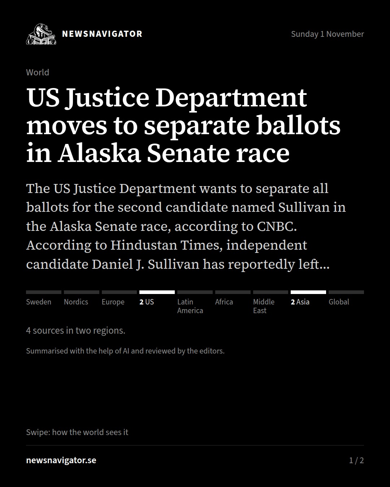
#26 · varlden · 4 källor · 2026-11-01
US Justice Department moves to separate ballots in Alaska Senate race
The US Justice Department wants to separate all ballots for the second candidate named Sullivan in the Alaska Senate race, according to CNBC. According to Hindustan Times, independent candidate Daniel J. Sullivan has reportedly left Petersburg, and his whereabouts are unknown.
Caption
US Justice Department moves to separate ballots in Alaska Senate race
The US Justice Department wants to separate all ballots for the second candidate named Sullivan in the Alaska Senate race, according to CNBC. According to Hindustan Times, independent candidate Daniel J. Sullivan has reportedly left Petersburg, and his whereabouts are unknown.
How the world sees it: Indian outlet Hindustan Times highlights the whereabouts of independent candidate Daniel J. Sullivan, reporting that he reportedly left Petersburg and that his location is unknown. US outlet NPR highlights allegations, which NPR attributes to The New York Times, that Democrats recruited a so-called spoiler candidate, and that the Justice Department wants to isolate ballots in Alaska. Singapore's The Straits Times highlights that the Trump administration has accelerated the criminal probe and that it adds uncertainty ahead of the November 3 midterm election. US outlet CNBC highlights that the Justice Department wants to separate all ballots for the second candidate named Sullivan and that the outcome could determine which party controls the Senate majority.
Sources: Hindustan Times, NPR, The Straits Times, CNBC
Full story with all links: https://newsnavigator.se/en/n/3f49784029/
Summarised with the help of AI and reviewed by the editors. We deliver the news. What you do with it is up to you.
#news #newsnavigator #worldnews #global #context #sources
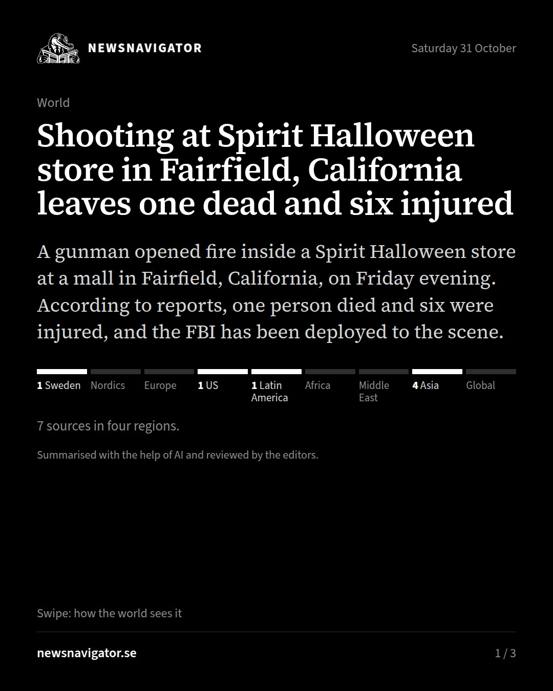
#27 · varlden · 7 källor · 2026-10-31
Shooting at Spirit Halloween store in Fairfield, California leaves one dead and six injured
A gunman opened fire inside a Spirit Halloween store at a mall in Fairfield, California, on Friday evening. According to reports, one person died and six were injured, and the FBI has been deployed to the scene.
Caption
Shooting at Spirit Halloween store in Fairfield, California leaves one dead and six injured
A gunman opened fire inside a Spirit Halloween store at a mall in Fairfield, California, on Friday evening. According to reports, one person died and six were injured, and the FBI has been deployed to the scene.
How the world sees it: The US outlet New York Post highlights the FBI deployment in its headline. Colombian outlet El Tiempo highlights that the suspected shooter is at large and that three of the injured are in critical condition. Pakistani outlet Dawn highlights police statements that the person responsible had not been identified, and the time of the shooting. Singaporean outlet CNA highlights that the shooting took place hours before Halloween, and The Straits Times highlights that at least three people are in critical condition, according to a police official. Indian outlet Hindustan Times highlights that police confirmed at least seven people were shot and that the victims were found in three locations.
Sources differ: El Tiempo reports that the suspected shooter is at large. Dawn writes that police had not yet identified the person responsible. Hindustan Times reports that the victims were found in three different locations, which the other sources do not mention.
Sources: New York Post, Expressen Nöje, El Tiempo, Dawn, CNA, The Straits Times, Hindustan Times
Full story with all links: https://newsnavigator.se/en/n/dd7326e914/
Summarised with the help of AI and reviewed by the editors. We deliver the news. What you do with it is up to you.
#news #newsnavigator #worldnews #global #context #sources
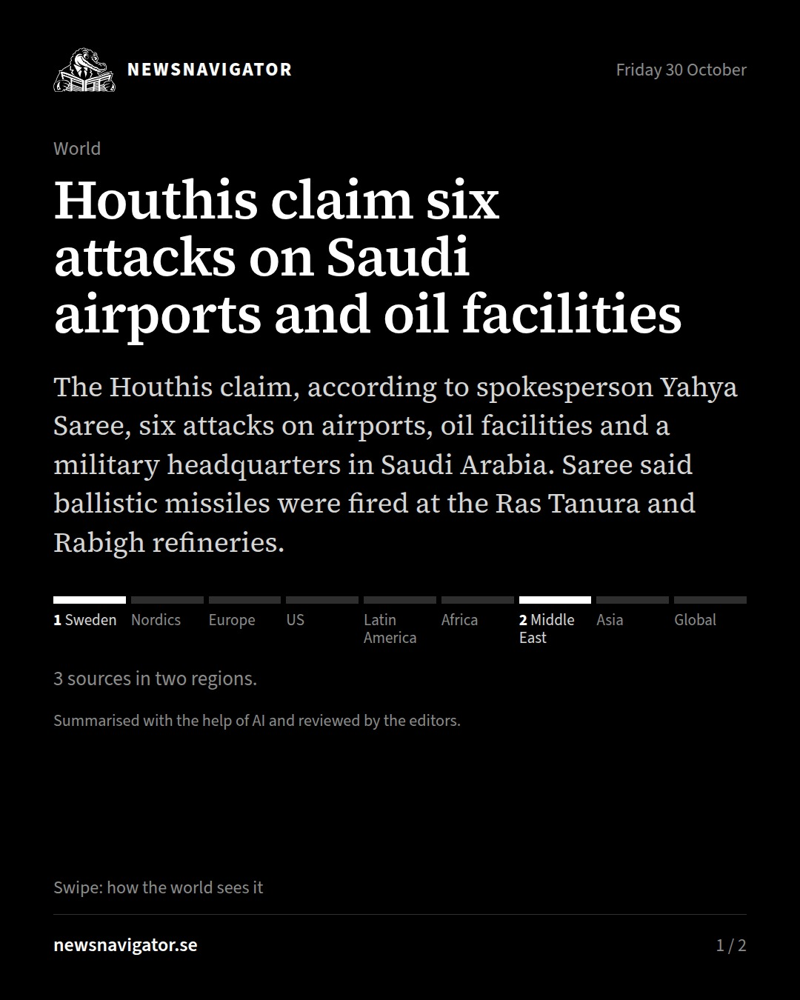
#28 · varlden · 3 källor · 2026-10-30
Houthis claim six attacks on Saudi airports and oil facilities
The Houthis claim, according to spokesperson Yahya Saree, six attacks on airports, oil facilities and a military headquarters in Saudi Arabia. Saree said ballistic missiles were fired at the Ras Tanura and Rabigh refineries.
Caption
Houthis claim six attacks on Saudi airports and oil facilities
The Houthis claim, according to spokesperson Yahya Saree, six attacks on airports, oil facilities and a military headquarters in Saudi Arabia. Saree said ballistic missiles were fired at the Ras Tanura and Rabigh refineries.
How the world sees it: Al Jazeera (Qatar) highlights the attacks on airports and oil facilities and talks between Iran and Mecca pact countries in Tehran earlier this week. Middle East Eye (UK) highlights spokesperson Yahya Saree and the claim that ballistic missiles were fired at the Ras Tanura and Rabigh refineries.
Sources: Sveriges Radio Ekot, Al Jazeera, Middle East Eye
Full story with all links: https://newsnavigator.se/en/n/ab4217a652/
Summarised with the help of AI and reviewed by the editors. We deliver the news. What you do with it is up to you.
#news #newsnavigator #worldnews #global #context #sources
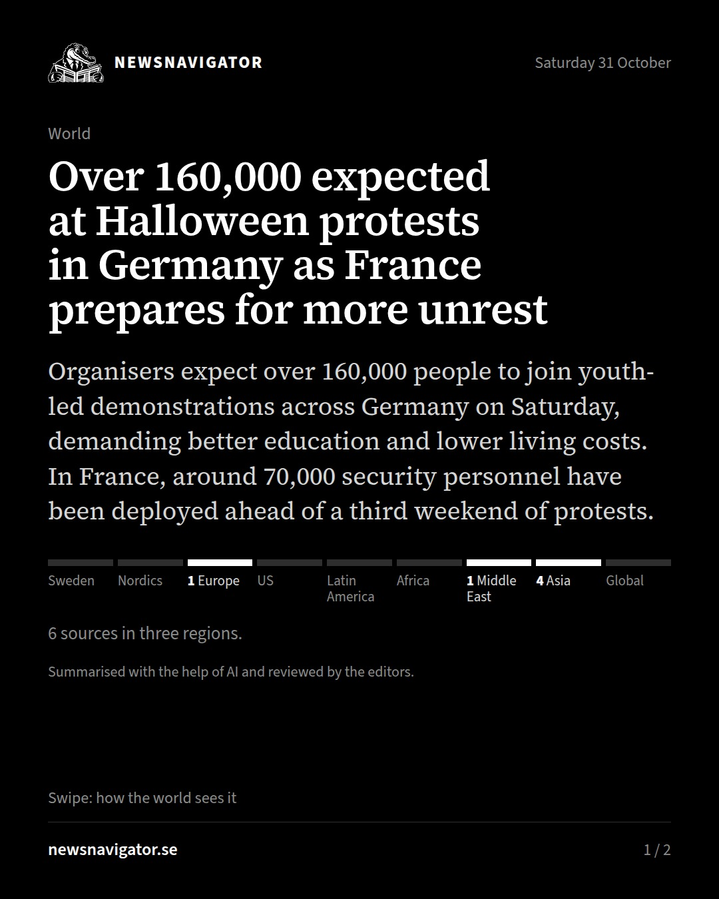
#29 · varlden · 6 källor · 2026-10-31
Over 160,000 expected at Halloween protests in Germany as France prepares for more unrest
Organisers expect over 160,000 people to join youth-led demonstrations across Germany on Saturday, demanding better education and lower living costs. In France, around 70,000 security personnel have been deployed ahead of a third weekend of protests.
Caption
Over 160,000 expected at Halloween protests in Germany as France prepares for more unrest
Organisers expect over 160,000 people to join youth-led demonstrations across Germany on Saturday, demanding better education and lower living costs. In France, around 70,000 security personnel have been deployed ahead of a third weekend of protests.
How the world sees it: French outlet France 24 and Indian outlet The Hindu focus mainly on security measures in France and fears of violence ahead of the weekend, with France 24 noting that rioters could use masks to conceal their identities. Pakistani outlet Dawn, Singaporean outlets CNA and The Straits Times focus primarily on the expected turnout in Germany. CNA also describes shops boarded up in France. The Straits Times mentions demands to oppose compulsory military service. Qatari outlet Al Jazeera describes a wider wave of youth protests across Europe, highlighting rising prices and a lack of prospects.
Sources: France 24, Dawn, The Hindu, CNA, Al Jazeera, The Straits Times
Full story with all links: https://newsnavigator.se/en/n/e8e8378506/
Summarised with the help of AI and reviewed by the editors. We deliver the news. What you do with it is up to you.
#news #newsnavigator #worldnews #global #context #sources
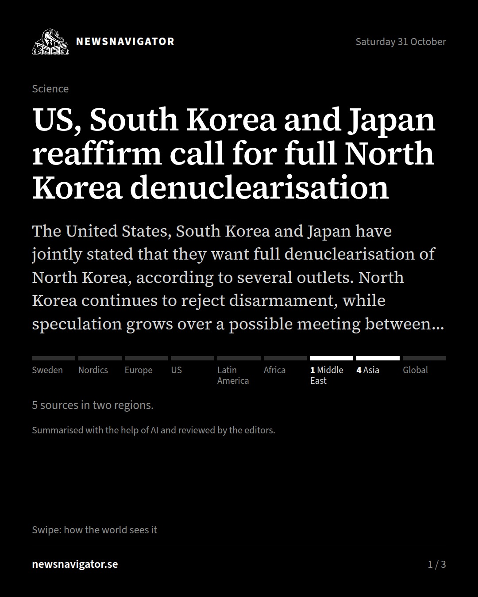
#30 · vetenskap · 5 källor · 2026-10-31
US, South Korea and Japan reaffirm call for full North Korea denuclearisation
The United States, South Korea and Japan have jointly stated that they want full denuclearisation of North Korea, according to several outlets. North Korea continues to reject disarmament, while speculation grows over a possible meeting between Donald Trump and Kim Jong Un.
Caption
US, South Korea and Japan reaffirm call for full North Korea denuclearisation
The United States, South Korea and Japan have jointly stated that they want full denuclearisation of North Korea, according to several outlets. North Korea continues to reject disarmament, while speculation grows over a possible meeting between Donald Trump and Kim Jong Un.
How the world sees it: The headlines are broadly similar and focus on the joint demand for North Korea's denuclearisation. The differences appear mainly in the leads: Al Jazeera (Qatar) and The Hindu (India) highlight Trump's wish for a meeting with Kim Jong Un. South China Morning Post (Hong Kong) highlights speculation about a meeting, while The Japan Times (Japan) highlights that Pyongyang continues to reject disarmament. CNA (Singapore) also highlights the pledge to fully implement UN Security Council resolutions.
Sources differ: Al Jazeera writes that Trump is seeking a new meeting with Kim Jong Un. South China Morning Post describes speculation as growing, and The Japan Times refers to possible talks with Washington. The Hindu states that a meeting could take place at the APEC summit in China next month.
Sources: Al Jazeera, South China Morning Post, The Japan Times, CNA, The Hindu
Full story with all links: https://newsnavigator.se/en/n/711beff1db/
Summarised with the help of AI and reviewed by the editors. We deliver the news. What you do with it is up to you.
#news #newsnavigator #science #research #context #sources
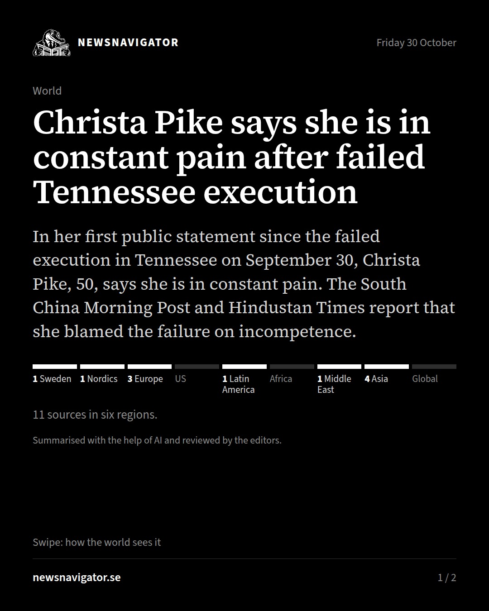
#31 · varlden · 11 källor · 2026-10-30
Christa Pike says she is in constant pain after failed execution
In her first public statement since the failed execution in Tennessee on September 30, Christa Pike, 50, says she is in constant pain. The South China Morning Post and Hindustan Times report that she blamed the failure on incompetence.
Caption
Christa Pike says she is in constant pain after failed Tennessee execution
In her first public statement since the failed execution in Tennessee on September 30, Christa Pike, 50, says she is in constant pain. The South China Morning Post and Hindustan Times report that she blamed the failure on incompetence.
How the world sees it: The headlines highlight different parts of Pike's statement. Al Jazeera (Qatar), The Straits Times (Singapore), The Hindu (India), NRK (Norway), Dagens Nyheter (Sweden) and Le Monde (France) make pain the main point of the headline. The South China Morning Post (Hong Kong) and Hindustan Times (India) put her claim of incompetence in the headline. El País (Spain) quotes her words about pain in body and soul in its headline. BBC World (UK) highlights that she woke up confused and in pain. Deutsche Welle (Germany) highlights pain in its headline and, in its ingress, the lawyers' request for a life sentence and the governor's investigation.
Sources: Al Jazeera, The Straits Times, BBC World, Deutsche Welle, South China Morning Post, The Hindu, El País América, Hindustan Times and 3 more
Full story with all links: https://newsnavigator.se/en/n/4414e6a1a8/
Summarised with the help of AI and reviewed by the editors. We deliver the news. What you do with it is up to you.
#news #newsnavigator #worldnews #global #context #sources
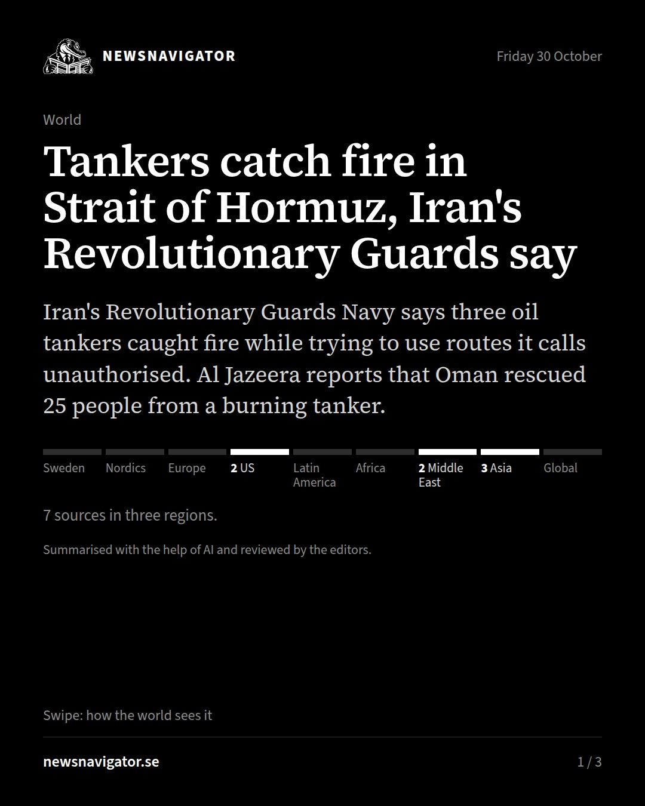
#32 · varlden · 7 källor · 2026-10-30
Tankers catch fire in Strait of Hormuz, Iran's Revolutionary Guards say
Iran's Revolutionary Guards Navy says three oil tankers caught fire while trying to use routes it calls unauthorised. Al Jazeera reports that Oman rescued 25 people from a burning tanker.
Caption
Tankers catch fire in Strait of Hormuz, Iran's Revolutionary Guards say
Iran's Revolutionary Guards Navy says three oil tankers caught fire while trying to use routes it calls unauthorised. Al Jazeera reports that Oman rescued 25 people from a burning tanker.
How the world sees it: The Singapore sources highlight different angles: CNA highlights that oil prices are set for a fourth straight monthly gain, while The Straits Times reports the Revolutionary Guards' statement. Qatari Al Jazeera highlights Oman's rescue operation. US sources highlight different aspects: CNBC highlights tankers continuing to transit despite a sharp escalation of Iranian attacks, and high freight rates as a financial incentive, while WSJ highlights rising oil prices after the Hormuz incident and claims by the Houthis. The Indian outlet The Hindu highlights Iran's claim about mines and ignored warnings. Al-Monitor reports the Revolutionary Guards' statement in the same form as The Straits Times.
Sources differ: The sources differ on the number of vessels and the cause. According to The Straits Times and Al-Monitor, the Revolutionary Guards say three tankers caught fire and exploded. The Hindu reports that Iran says four tankers were on fire after hitting mines, and that the vessels had switched off radar and navigation systems and ignored warnings. Al Jazeera reports that Iran said three tankers were halted while trying to use unauthorised routes.
Sources: CNA, Al Jazeera, CNBC, The Straits Times, Al-Monitor, The Hindu, The Wall Street Journal
Full story with all links: https://newsnavigator.se/en/n/ef76214cc6/
Summarised with the help of AI and reviewed by the editors. We deliver the news. What you do with it is up to you.
#news #newsnavigator #worldnews #global #context #sources
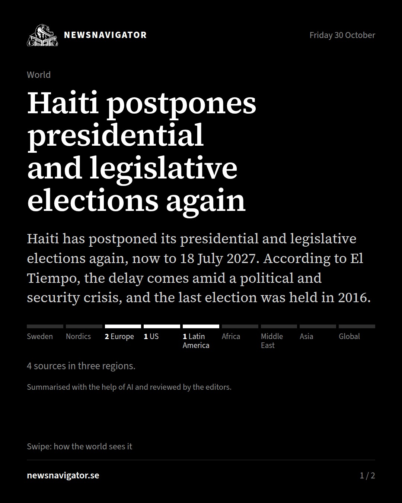
#33 · varlden · 4 källor · 2026-10-30
Haiti postpones presidential and legislative elections again
Haiti has postponed its presidential and legislative elections again, now to 18 July 2027. According to El Tiempo, the delay comes amid a political and security crisis, and the last election was held in 2016.
Caption
Haiti postpones presidential and legislative elections again
Haiti has postponed its presidential and legislative elections again, now to 18 July 2027. According to El Tiempo, the delay comes amid a political and security crisis, and the last election was held in 2016.
How the world sees it: Colombian outlet El Tiempo highlights the political and security crisis in its headline and the 2016 election in its lead. US outlet The New York Times highlights gang violence in its headline as the context for the postponement.
Sources: El Tiempo, BBC World, Euractiv, The New York Times
Full story with all links: https://newsnavigator.se/en/n/7d97624432/
Summarised with the help of AI and reviewed by the editors. We deliver the news. What you do with it is up to you.
#news #newsnavigator #worldnews #global #context #sources
#34 · varlden · 4 källor · 2026-10-30
US judge blocks Trump Medicaid rule on work requirements for ill people
According to several sources, a US federal judge has blocked a Trump administration rule on Medicaid work requirements for people who are ill. The judge sided with 25 states and the District of Columbia, which sued the administration.
Caption
US judge blocks Trump Medicaid rule on work requirements for ill people
According to several sources, a US federal judge has blocked a Trump administration rule on Medicaid work requirements for people who are ill. The judge sided with 25 states and the District of Columbia, which sued the administration.
How the world sees it: The sources from different countries highlight different parts. Al Jazeera (Qatar) highlights that the rule requires ill people to prove impairment and which parties sued. Hindustan Times (India) reports the decision in a headline that uses the word frailty. The Washington Examiner (US) highlights the judge's appointment and that the lawsuit comes from states with Democratic leadership. The New York Times (US) highlights in its headline the court and the rule as strict.
Sources differ: The sources describe the rule with different terms. Al Jazeera says ill people must prove impairment, Hindustan Times says they must prove frailty, and the Washington Examiner describes a definition of 'medically frail'.
Sources: Al Jazeera, Washington Examiner, Hindustan Times, The New York Times
Full story with all links: https://newsnavigator.se/en/n/3d45ae69be/
Summarised with the help of AI and reviewed by the editors. We deliver the news. What you do with it is up to you.
#news #newsnavigator #worldnews #global #context #sources
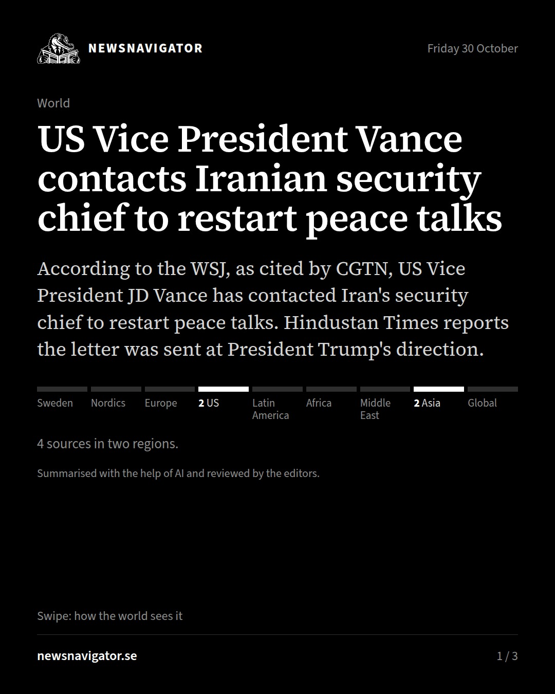
#35 · varlden · 4 källor · 2026-10-30
US Vice President Vance contacts Iranian security chief to restart peace talks
According to the WSJ, as cited by CGTN, US Vice President JD Vance has contacted Iran's security chief to restart peace talks. Hindustan Times reports the letter was sent at President Trump's direction.
Caption
US Vice President Vance contacts Iranian security chief to restart peace talks
According to the WSJ, as cited by CGTN, US Vice President JD Vance has contacted Iran's security chief to restart peace talks. Hindustan Times reports the letter was sent at President Trump's direction.
How the world sees it: The headlines highlight different things. Hindustan Times (India) and the Wall Street Journal (US) highlight that Vance reaches out to an Iranian hardliner, and Hindustan Times also highlights that this is done at Trump's direction. The New York Times (US) highlights that Vance proposes restarting the peace talks. CGTN (China, state-controlled media) highlights, according to the WSJ, that the contact could stave off a renewed American attack on Iran.
Sources differ: Hindustan Times and the Wall Street Journal both call the Iranian recipient a hard-liner in their headlines. The NYT headline and the CGTN lead do not use that description. The NYT writes that Vance proposes restarting talks, while the WSJ and Hindustan Times write that Vance reaches out to the Iranian official.
Sources: Hindustan Times, The New York Times, The Wall Street Journal, CGTN (state-controlled)
Full story with all links: https://newsnavigator.se/en/n/62a0c9e5cd/
Summarised with the help of AI and reviewed by the editors. We deliver the news. What you do with it is up to you.
#news #newsnavigator #worldnews #global #context #sources
#36 · marknader · 7 källor · 2026-10-30
ECB keeps interest rates unchanged and Lagarde to step down early
The European Central Bank (ECB) keeps its policy rate unchanged, according to several sources. Sveriges Radio Ekot reports that the decision was expected, and ECB president Christine Lagarde announced the same day that she will step down early, in February next year.
Caption
ECB keeps interest rates unchanged and Lagarde to step down early
The European Central Bank (ECB) keeps its policy rate unchanged, according to several sources. Sveriges Radio Ekot reports that the decision was expected, and ECB president Christine Lagarde announced the same day that she will step down early, in February next year.
How the world sees it: Spanish outlet El País América highlights that the decision was divided, that the bank has debated a rate hike, and mentions the energy threat, the rise in bond yields and the risk to growth. Swedish outlet Sveriges Radio Ekot highlights that the decision was expected and in line with analysts' average forecast, according to Bloomberg. Belgian outlet Euractiv and Danish outlet DR Nyheder mainly highlight that the rate is held, with Euractiv linking this to Lagarde's announcement that she will step down early.
Sources differ: Euractiv gives the rate as 2.5%, while Sveriges Radio Ekot gives it as 2.65%. The sources do not agree on the level of the policy rate.
Sources: DR Nyheder, Euractiv, Sveriges Radio Ekot, El País América, The Hindu, El País (English), The National (state-controlled)
Full story with all links: https://newsnavigator.se/en/n/f7dfa48bac/
Summarised with the help of AI and reviewed by the editors. We deliver the news. What you do with it is up to you.
#news #newsnavigator #markets #economy #context #sources
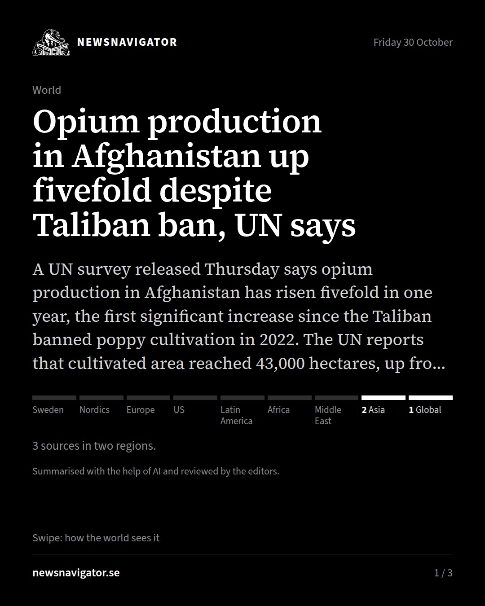
#37 · varlden · 3 källor · 2026-10-30
Opium production in Afghanistan up fivefold despite Taliban ban, UN says
A UN survey released Thursday says opium production in Afghanistan has risen fivefold in one year, the first significant increase since the Taliban banned poppy cultivation in 2022. The UN reports that cultivated area reached 43,000 hectares, up from 10,000 in 2025.
Caption
Opium production in Afghanistan up fivefold despite Taliban ban, UN says
A UN survey released Thursday says opium production in Afghanistan has risen fivefold in one year, the first significant increase since the Taliban banned poppy cultivation in 2022. The UN reports that cultivated area reached 43,000 hectares, up from 10,000 in 2025.
How the world sees it: The sources come from the UN (international organization), Pakistan (Dawn) and India (The Hindu). UN News headlines the fivefold increase in production and farmers finding ways around the ban. Dawn and The Hindu headline the rise in cultivation despite the Taliban government ban. In its ingress, The Hindu focuses on the 2022 ban and the resulting drop in cultivated area.
Sources differ: UN News says opium production has increased fivefold in one year. Dawn says cultivated area more than quadrupled in 2026, reporting 43,000 hectares compared with 10,000 hectares in 2025. The measures differ: production in one source and cultivated area in the other. The Hindu reports that the area fell from more than 200,000 hectares to 10,000 hectares in 2025 after the 2022 crackdown.
Sources: UN News, Dawn, The Hindu
Full story with all links: https://newsnavigator.se/en/n/a9b85f4805/
Summarised with the help of AI and reviewed by the editors. We deliver the news. What you do with it is up to you.
#news #newsnavigator #worldnews #global #context #sources
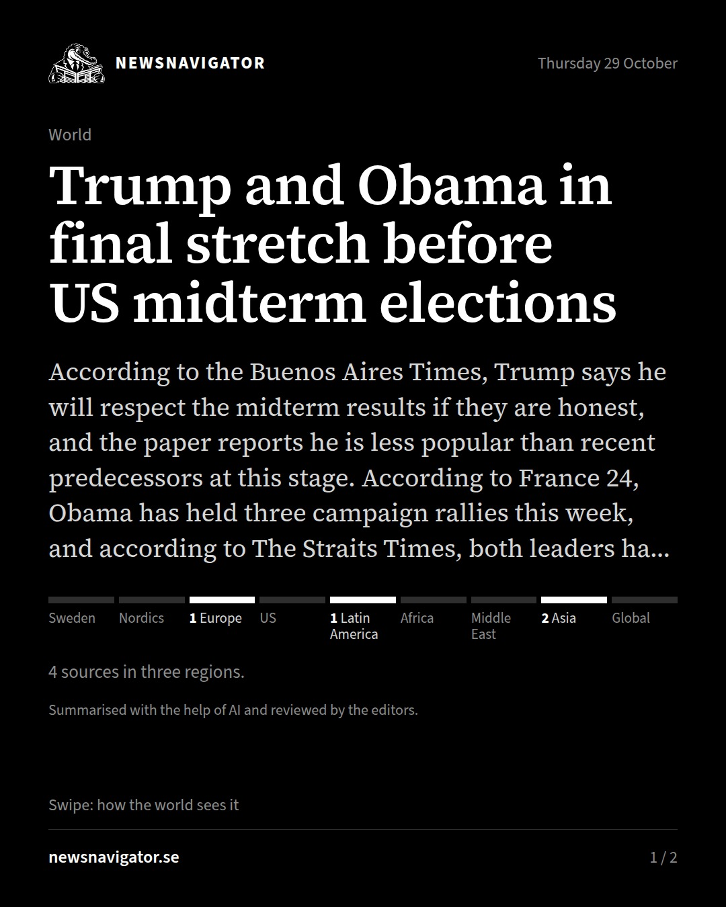
#38 · varlden · 4 källor · 2026-10-29
Trump and Obama in final stretch before US midterm elections
According to the Buenos Aires Times, Trump says he will respect the midterm results if they are honest, and the paper reports he is less popular than recent predecessors at this stage. According to France 24, Obama has held three campaign rallies this week, and according to The Straits Times, both leaders have prominent roles in the campaign.
Caption
Trump and Obama in final stretch before US midterm elections
According to the Buenos Aires Times, Trump says he will respect the midterm results if they are honest, and the paper reports he is less popular than recent predecessors at this stage. According to France 24, Obama has held three campaign rallies this week, and according to The Straits Times, both leaders have prominent roles in the campaign.
How the world sees it: The Argentine Buenos Aires Times highlights Trump's statement on the election results and opinion polling. The French outlet France 24 highlights Obama's campaign appearances for the Democrats. The Pakistani outlet Dawn highlights Obama's comment on the White House's response to an earlier remark. The Singaporean outlet The Straits Times describes both leaders' roles and their exchange of barbs in the campaign.
Sources: Buenos Aires Times, France 24, Dawn, The Straits Times
Full story with all links: https://newsnavigator.se/en/n/d3d258dca5/
Summarised with the help of AI and reviewed by the editors. We deliver the news. What you do with it is up to you.
#news #newsnavigator #worldnews #global #context #sources
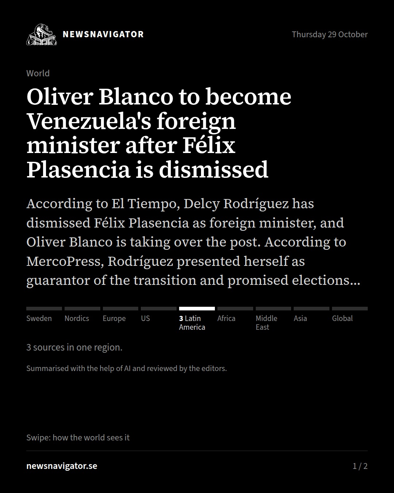
#39 · varlden · 3 källor · 2026-10-29
Delcy Rodríguez promises Venezuela elections without a set date
According to El Tiempo, Delcy Rodríguez has dismissed Félix Plasencia as foreign minister, and Oliver Blanco is taking over the post. According to MercoPress, Rodríguez presented herself as guarantor of the transition and promised elections without giving a date.
Caption
Oliver Blanco to become Venezuela's foreign minister after Félix Plasencia is dismissed
According to El Tiempo, Delcy Rodríguez has dismissed Félix Plasencia as foreign minister, and Oliver Blanco is taking over the post. According to MercoPress, Rodríguez presented herself as guarantor of the transition and promised elections without giving a date.
Sources differ: The sources describe Blanco's background differently. El País highlights that he comes from the opposition and describes him as a young diplomat. El Tiempo mentions that he previously served as vice minister for Europe and North America. The descriptions do not directly contradict each other.
Sources: El País América, El Tiempo, MercoPress
Full story with all links: https://newsnavigator.se/en/n/6d0537b3e2/
Summarised with the help of AI and reviewed by the editors. We deliver the news. What you do with it is up to you.
#news #newsnavigator #worldnews #global #context #sources
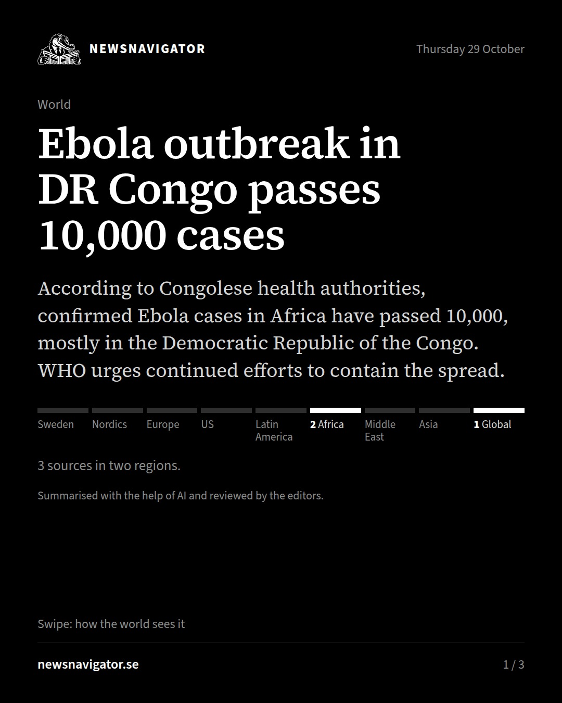
#40 · varlden · 3 källor · 2026-10-29
Ebola outbreak in DR Congo passes 10,000 cases
According to Congolese health authorities, confirmed Ebola cases in Africa have passed 10,000, mostly in the Democratic Republic of the Congo. WHO urges continued efforts to contain the spread.
Caption
Ebola outbreak in DR Congo passes 10,000 cases
According to Congolese health authorities, confirmed Ebola cases in Africa have passed 10,000, mostly in the Democratic Republic of the Congo. WHO urges continued efforts to contain the spread.
Sources differ: Africanews reports almost 5,000 deaths, citing Congolese health authorities. DW, republished by AllAfrica, reports nearly 4,900 deaths.
Sources: UN News, Africanews, AllAfrica
Full story with all links: https://newsnavigator.se/en/n/67532b1a15/
Summarised with the help of AI and reviewed by the editors. We deliver the news. What you do with it is up to you.
#news #newsnavigator #worldnews #global #context #sources
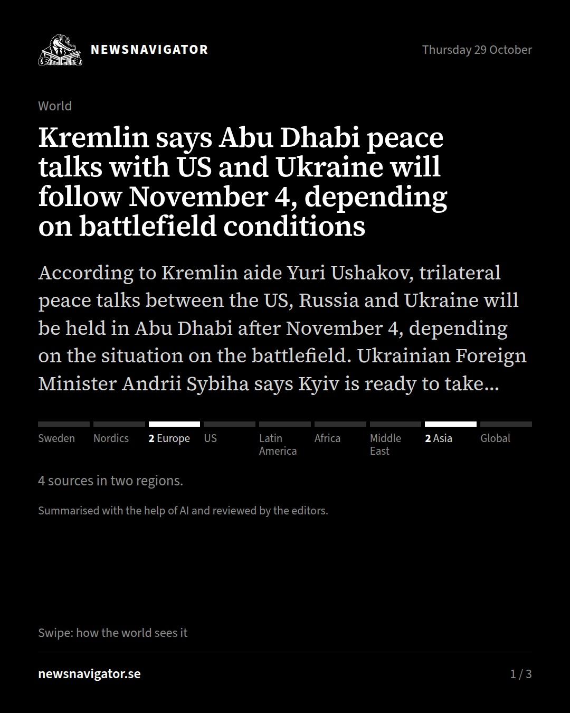
#41 · varlden · 4 källor · 2026-10-29
Kremlin says Abu Dhabi peace talks with US and Ukraine will follow November 4, depending on battlefield conditions
According to Kremlin aide Yuri Ushakov, trilateral peace talks between the US, Russia and Ukraine will be held in Abu Dhabi after November 4, depending on the situation on the battlefield. Ukrainian Foreign Minister Andrii Sybiha says Kyiv is ready to take part, while fighting continues.
Caption
Kremlin says Abu Dhabi peace talks with US and Ukraine will follow November 4, depending on battlefield conditions
According to Kremlin aide Yuri Ushakov, trilateral peace talks between the US, Russia and Ukraine will be held in Abu Dhabi after November 4, depending on the situation on the battlefield. Ukrainian Foreign Minister Andrii Sybiha says Kyiv is ready to take part, while fighting continues.
How the world sees it: Kyiv Independent (Ukraine) headlines that Russia says the battlefield situation will determine when talks begin, and reports that Ushakov rules out European participation. Meduza (Latvia) headlines the Kremlin's statement that talks will take place after November 4. CGTN (Chinese state media) headlines that Ukraine and Russia are preparing for trilateral talks as fighting intensifies, and its lead highlights Ukraine's readiness to take part.
Sources differ: Kyiv Independent does not give a date for when the talks begin. Meduza states they will be held after November 4. The sources do not contradict each other.
Sources: The Straits Times, The Kyiv Independent, Meduza, CGTN (state-controlled)
Full story with all links: https://newsnavigator.se/en/n/7dfb1bf83f/
Summarised with the help of AI and reviewed by the editors. We deliver the news. What you do with it is up to you.
#news #newsnavigator #worldnews #global #context #sources
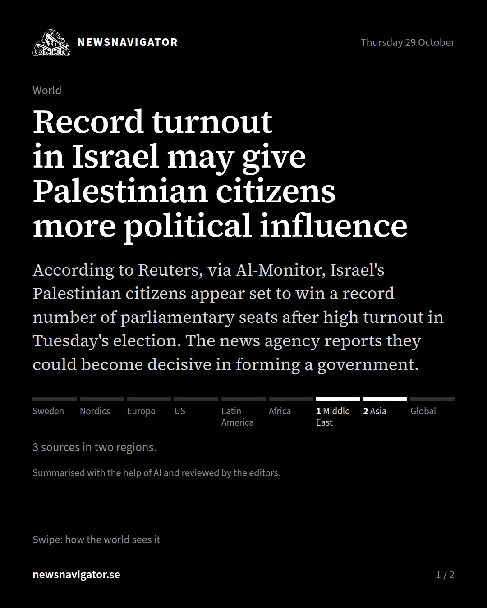
#42 · varlden · 3 källor · 2026-10-29
Record turnout in Israel may give Palestinian citizens more political influence
According to Reuters, via Al-Monitor, Israel's Palestinian citizens appear set to win a record number of parliamentary seats after high turnout in Tuesday's election. The news agency reports they could become decisive in forming a government.
Caption
Record turnout in Israel may give Palestinian citizens more political influence
According to Reuters, via Al-Monitor, Israel's Palestinian citizens appear set to win a record number of parliamentary seats after high turnout in Tuesday's election. The news agency reports they could become decisive in forming a government.
How the world sees it: Al-Monitor (USA) and The Straits Times (Singapore) have largely the same headline and highlight the record turnout and the political influence of Palestinian citizens. The Straits Times ingress reports that these citizens, by their own description, were mobilized by the government's policies, which they call racist. The Hindu (India) uses a different headline, framing the election as a verdict on Netanyahu, and its ingress highlights the aftermath of the October 7 attack, the multi-front regional wars, and questions of accountability and security in the campaign.
Sources: Al-Monitor, The Straits Times, The Hindu
Full story with all links: https://newsnavigator.se/en/n/dda731ea51/
Summarised with the help of AI and reviewed by the editors. We deliver the news. What you do with it is up to you.
#news #newsnavigator #worldnews #global #context #sources
#43 · varlden · 4 källor · 2026-10-29
Israel: Parties Seek Routes to Government After Election
According to Middle East Eye, Avigdor Lieberman has reportedly stopped taking calls from opposition leaders as parties try to break the post-election deadlock. Al-Monitor reports that Donald Trump, who endorsed Benjamin Netanyahu, says he will look at ways to help form a unity government.
Caption
Israel: Parties Seek Routes to Government After Election
According to Middle East Eye, Avigdor Lieberman has reportedly stopped taking calls from opposition leaders as parties try to break the post-election deadlock. Al-Monitor reports that Donald Trump, who endorsed Benjamin Netanyahu, says he will look at ways to help form a unity government.
How the world sees it: Middle East Eye (UK) highlights reports that Avigdor Lieberman has stopped taking calls from opposition leaders and the deadlock in government formation. The Hindu (India) highlights Golan's proposal for Arab parties to form or back a government, and reports that several allies in the opposition bloc have rejected it. Al-Monitor (US) highlights Donald Trump's endorsement of Benjamin Netanyahu and his possible role in government formation. The New York Times (US) highlights that parties are preparing for lengthy negotiations with no clear path forward.
Sources: Middle East Eye, Al-Monitor, The Hindu, The New York Times
Full story with all links: https://newsnavigator.se/en/n/2db108ad6c/
Summarised with the help of AI and reviewed by the editors. We deliver the news. What you do with it is up to you.
#news #newsnavigator #worldnews #global #context #sources
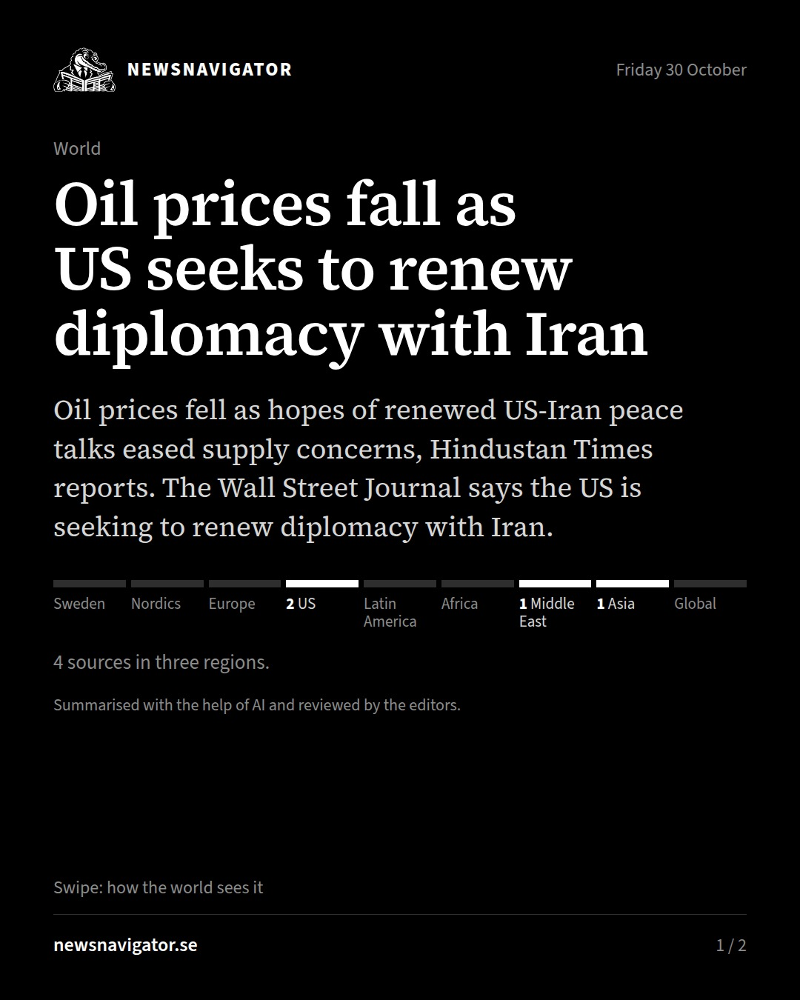
#44 · varlden · 4 källor · 2026-10-30
Oil prices fall as US seeks to renew diplomacy with Iran
Oil prices fell as hopes of renewed US-Iran peace talks eased supply concerns, Hindustan Times reports. The Wall Street Journal says the US is seeking to renew diplomacy with Iran.
Caption
Oil prices fall as US seeks to renew diplomacy with Iran
Oil prices fell as hopes of renewed US-Iran peace talks eased supply concerns, Hindustan Times reports. The Wall Street Journal says the US is seeking to renew diplomacy with Iran.
How the world sees it: The Washington Examiner (US) headlines two deaths of Air Force personnel in the Middle East, classified as non-hostile. The Wall Street Journal (US) and Hindustan Times (India) headline falling oil prices in connection with diplomatic efforts. The National (UAE, state-controlled media) also headlines the drop in oil prices, following a diplomatic push in the Iran war.
Sources: Washington Examiner, Hindustan Times, The Wall Street Journal, The National (state-controlled)
Full story with all links: https://newsnavigator.se/en/n/40c2af40cf/
Summarised with the help of AI and reviewed by the editors. We deliver the news. What you do with it is up to you.
#news #newsnavigator #worldnews #global #context #sources
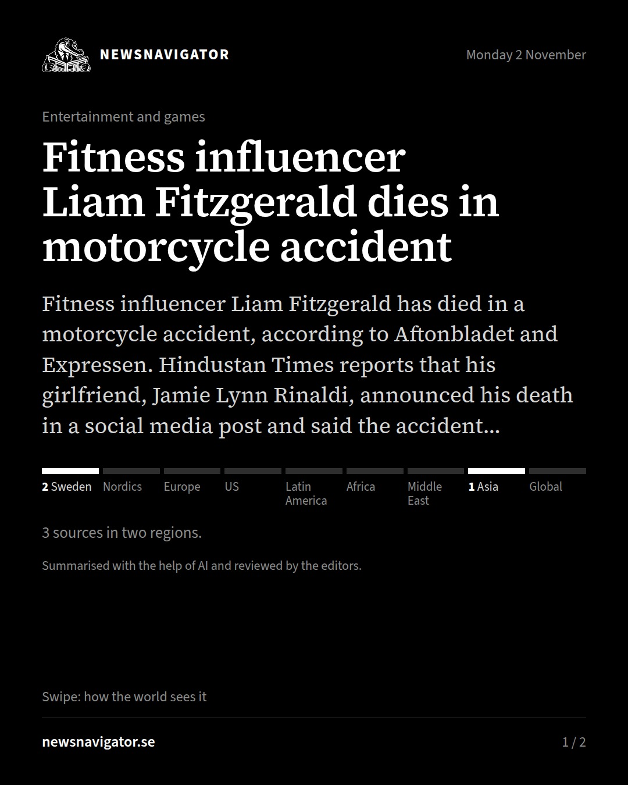
#45 · noje · 3 källor · 2026-11-02
Fitness influencer Liam Fitzgerald dies in motorcycle accident
Fitness influencer Liam Fitzgerald has died in a motorcycle accident, according to Aftonbladet and Expressen. Hindustan Times reports that his girlfriend, Jamie Lynn Rinaldi, announced his death in a social media post and said the accident happened at around 2 am.
Caption
Fitness influencer Liam Fitzgerald dies in motorcycle accident
Fitness influencer Liam Fitzgerald has died in a motorcycle accident, according to Aftonbladet and Expressen. Hindustan Times reports that his girlfriend, Jamie Lynn Rinaldi, announced his death in a social media post and said the accident happened at around 2 am.
How the world sees it: Swedish headlines (Aftonbladet and Expressen) highlight the death and that it occurred in a motorcycle accident. The Indian headline from Hindustan Times highlights that tributes are pouring in and describes Fitzgerald as a fitness influencer.
Sources: Aftonbladet Nöjesbladet, Expressen Nöje, Hindustan Times
Full story with all links: https://newsnavigator.se/en/n/41de69630e/
Summarised with the help of AI and reviewed by the editors. We deliver the news. What you do with it is up to you.
#news #newsnavigator #entertainment #gaming #culture #context #sources
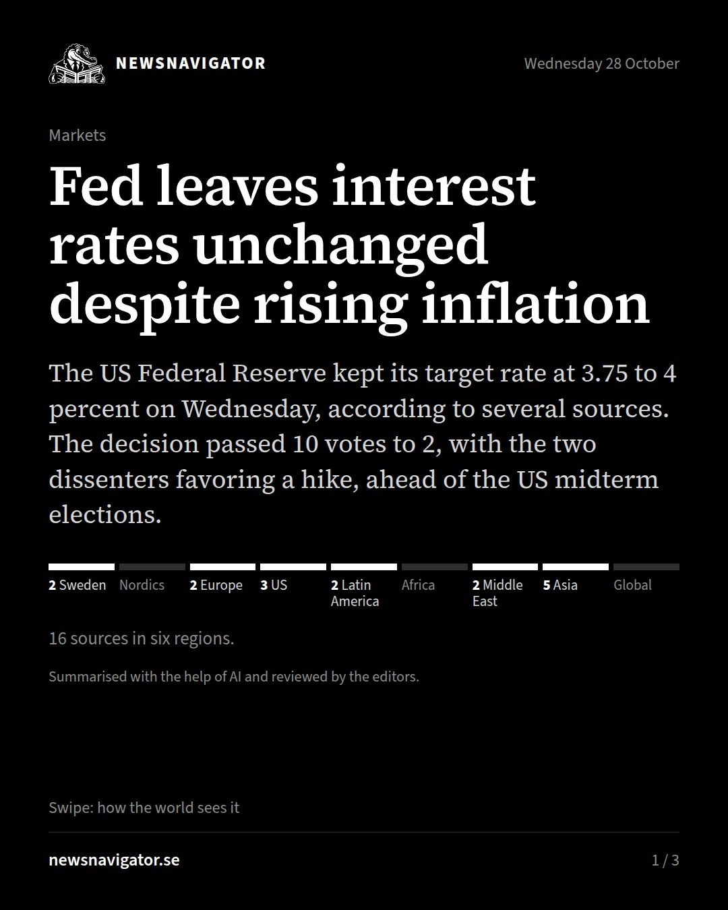
#46 · marknader · 16 källor · 2026-10-28
Fed leaves interest rates unchanged despite rising inflation
The US Federal Reserve kept its target rate at 3.75 to 4 percent on Wednesday, according to several sources. The decision passed 10 votes to 2, with the two dissenters favoring a hike, ahead of the US midterm elections.
Caption
Fed leaves interest rates unchanged despite rising inflation
The US Federal Reserve kept its target rate at 3.75 to 4 percent on Wednesday, according to several sources. The decision passed 10 votes to 2, with the two dissenters favoring a hike, ahead of the US midterm elections.
How the world sees it: American sources highlight the bond market and the election: CNBC writes that the 10-year Treasury yield edges higher, and The Daily Caller that the decision is the last before the midterms. The Hill highlights Fed Chair Kevin Warsh's remarks after the decision. The British newspaper The Guardian highlights Warsh's statement that politics played no role in the pause in rate hikes. The Indian newspaper The Hindu and the Hong Kong-based South China Morning Post highlight sharply rising inflation. The state-controlled The National from the United Arab Emirates also highlights inflation. South Korea's Yonhap and India's Hindustan Times highlight the September hike. Sweden's Dagens industri highlights that short-term US rates fall after the Fed chair's remarks.
Sources differ: The sources agree on the decision and on the two members who wanted a hike. They describe inflation differently: The Guardian writes that it is above 3 percent, while The Hindu and South China Morning Post write about sharply rising inflation. Al Jazeera writes that inflation continues to rise.
Sources: CNBC, The Guardian, Al Jazeera, Hindustan Times, The Hindu, South China Morning Post, Yonhap, The Rio Times and 8 more
Full story with all links: https://newsnavigator.se/en/n/9062242389/
Summarised with the help of AI and reviewed by the editors. We deliver the news. What you do with it is up to you.
#news #newsnavigator #markets #economy #context #sources
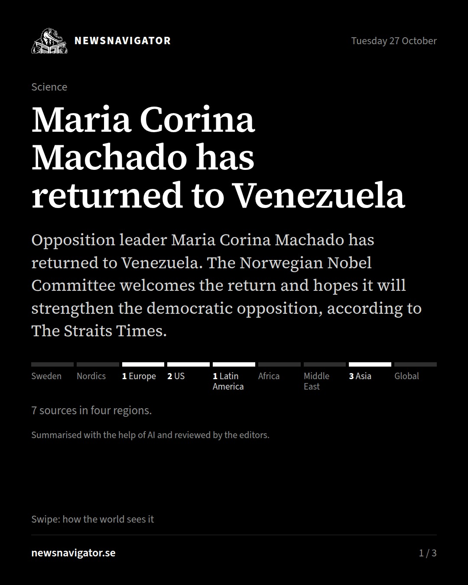
#47 · vetenskap · 7 källor · 2026-10-27
Maria Corina Machado has returned to Venezuela
Opposition leader Maria Corina Machado has returned to Venezuela. The Norwegian Nobel Committee welcomes the return and hopes it will strengthen the democratic opposition, according to The Straits Times.
Caption
Maria Corina Machado has returned to Venezuela
Opposition leader Maria Corina Machado has returned to Venezuela. The Norwegian Nobel Committee welcomes the return and hopes it will strengthen the democratic opposition, according to The Straits Times.
How the world sees it: Indian and Singaporean sources highlight the Nobel Committee's reaction. The Hindu writes that the committee says Venezuela needs democratic change despite the return, while The Straits Times writes that the committee welcomes it. Spanish El País highlights the US role in the return, according to Marco Rubio. French Le Monde writes that the return gives new energy to the opposition. The American New York Times highlights the limits of US influence. Hindustan Times and The Wall Street Journal have the same headline and highlight what the return means for Venezuela. Hindustan Times writes that Machado wants to revive a political movement and persuade Washington that Venezuela needs a change of government.
Sources differ: The sources describe the US role differently. According to El País, US Secretary of State Marco Rubio says the US negotiated the return several weeks earlier, while The New York Times, in its headline, highlights the limits of US influence.
Sources: The Hindu, The Straits Times, Hindustan Times, El País América, The New York Times, Le Monde (English), The Wall Street Journal
Full story with all links: https://newsnavigator.se/en/n/826230de4c/
Summarised with the help of AI and reviewed by the editors. We deliver the news. What you do with it is up to you.
#news #newsnavigator #science #research #context #sources
#48 · tech · 6 källor · 2026-10-27
Apple launches new MacBook Pro and iMac with M6 chip
Apple has launched a new 14-inch MacBook Pro and an updated iMac with the M6 chip. Hindustan Times reports starting prices of $1,999 for the MacBook Pro and $1,499 for the iMac, and TechCrunch says the MacBook Pro offers 24 hours of battery life.
Caption
Apple launches new MacBook Pro and iMac with M6 chip
Apple has launched a new 14-inch MacBook Pro and an updated iMac with the M6 chip. Hindustan Times reports starting prices of $1,999 for the MacBook Pro and $1,499 for the iMac, and TechCrunch says the MacBook Pro offers 24 hours of battery life.
How the world sees it: The Indian outlet Hindustan Times highlights prices and performance in its headline, with faster AI and improved graphics. US sources highlight different aspects: TechCrunch highlights battery life and support for Wi-Fi 7 and Bluetooth 6, Tom's Hardware highlights the update to the 14-inch model and the iMac, and The Verge highlights that the entry-level MacBook Pro gets the M6 chip, which according to the outlet was launched in August in the Mac Mini. Singapore's The Straits Times highlights in its headline that the Macs are part of a series of changes and mentions a touch laptop, while CNA highlights faster on-device AI.
Sources: Hindustan Times, TechCrunch, The Straits Times, CNA, Tom's Hardware, The Verge
Full story with all links: https://newsnavigator.se/en/n/a1e7bb3ea8/
Summarised with the help of AI and reviewed by the editors. We deliver the news. What you do with it is up to you.
#news #newsnavigator #tech #ai #context #sources
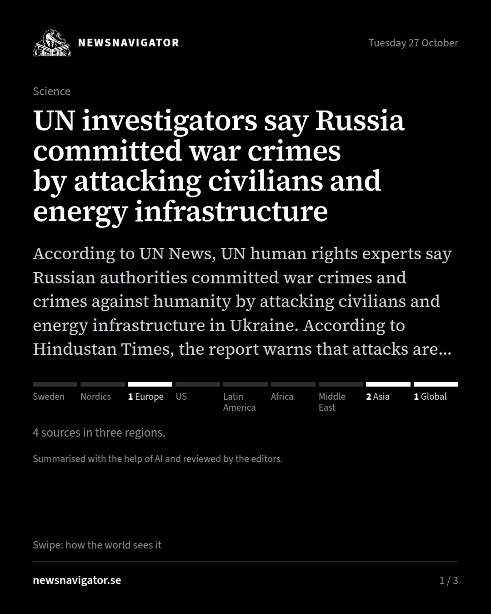
#49 · vetenskap · 4 källor · 2026-10-27
UN investigators say Russia committed war crimes by attacking civilians and energy infrastructure
According to UN News, UN human rights experts say Russian authorities committed war crimes and crimes against humanity by attacking civilians and energy infrastructure in Ukraine. According to Hindustan Times, the report warns that attacks are increasing ahead of winter, raising concerns for civilians.
Caption
UN investigators say Russia committed war crimes by attacking civilians and energy infrastructure
According to UN News, UN human rights experts say Russian authorities committed war crimes and crimes against humanity by attacking civilians and energy infrastructure in Ukraine. According to Hindustan Times, the report warns that attacks are increasing ahead of winter, raising concerns for civilians.
How the world sees it: UN News, a UN source, and the Ukrainian Kyiv Independent lead their headlines with the inquiry's finding of war crimes. The Indian Hindustan Times also includes Moscow's rejection of the report in its headline. The other Indian source, The Hindu, headlines a different topic: Russia's openness to short ceasefires.
Sources differ: According to Hindustan Times, Moscow dismisses the report and calls the data falsified.
Sources: UN News, The Kyiv Independent, Hindustan Times, The Hindu
Full story with all links: https://newsnavigator.se/en/n/f2f20413f4/
Summarised with the help of AI and reviewed by the editors. We deliver the news. What you do with it is up to you.
#news #newsnavigator #science #research #context #sources
#50 · tech · 4 källor · 2026-10-27
Nvidia invests in Meta, which plans to raise $95 billion
Meta plans to raise a total of $95 billion for AI infrastructure, according to several sources. Hindustan Times and The Information report that Nvidia is investing $3 billion in the company, while CNBC cites $4 billion for Nvidia and AMD combined.
Caption
Nvidia invests in Meta, which plans to raise $95 billion
Meta plans to raise a total of $95 billion for AI infrastructure, according to several sources. Hindustan Times and The Information report that Nvidia is investing $3 billion in the company, while CNBC cites $4 billion for Nvidia and AMD combined.
How the world sees it: CNBC highlights that Nvidia and AMD are investing in Meta and describes it as a deepening partnership between tech giants. The Information highlights the deeper AI partnership between Nvidia and Meta. Hindustan Times highlights Meta's plan to expand AI infrastructure and develop advanced AI agents. The Decoder highlights that Meta plans to run more of its AI agents on Nvidia hardware and to buy more Nvidia chips.
Sources differ: CNBC reports that Nvidia and AMD together are investing $4 billion in Meta. Hindustan Times, The Decoder and The Information report that Nvidia is investing $3 billion. The sources do not specify how the $4 billion is divided between Nvidia and AMD.
Sources: CNBC, Hindustan Times, The Decoder, The Information
Full story with all links: https://newsnavigator.se/en/n/53ec80ffda/
Summarised with the help of AI and reviewed by the editors. We deliver the news. What you do with it is up to you.
#news #newsnavigator #tech #ai #context #sources
#51 · tech · 4 källor · 2026-10-28
Anthropic files for IPO with SEC, plans Nasdaq listing
Anthropic has filed a registration statement (S-1) with the SEC and plans to list on Nasdaq under the ticker ANT, according to The Decoder. The same source reports quarterly revenue of $11.6 billion and the company's first-ever operating profit.
Caption
Anthropic files for IPO with SEC, plans Nasdaq listing
Anthropic has filed a registration statement (S-1) with the SEC and plans to list on Nasdaq under the ticker ANT, according to The Decoder. The same source reports quarterly revenue of $11.6 billion and the company's first-ever operating profit.
How the world sees it: US sources (The Verge and CNBC) emphasize the tension between the company's mission and shareholder demands, and the IPO's significance for the AI sector and interest rates. The German source The Decoder emphasizes record revenue and growing financial obligations. Swedish Dagens Industri, in its headline, says Wall Street is bubbling after Anthropic's announcement.
Sources: The Verge, CNBC, The Decoder, Dagens industri
Full story with all links: https://newsnavigator.se/en/n/f0977edcba/
Summarised with the help of AI and reviewed by the editors. We deliver the news. What you do with it is up to you.
#news #newsnavigator #tech #ai #context #sources
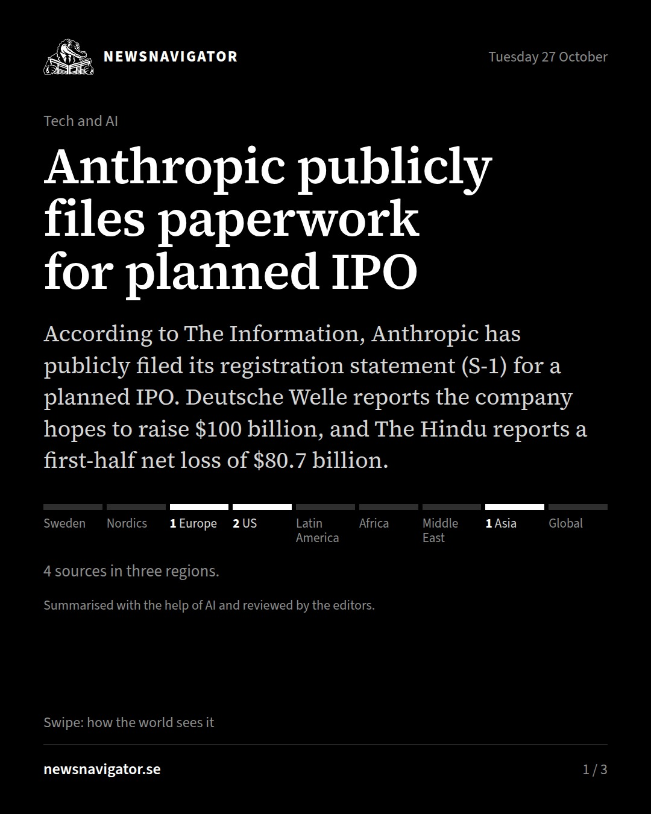
#52 · tech · 4 källor · 2026-10-27
Anthropic publicly files paperwork for planned IPO
According to The Information, Anthropic has publicly filed its registration statement (S-1) for a planned IPO. Deutsche Welle reports the company hopes to raise $100 billion, and The Hindu reports a first-half net loss of $80.7 billion.
Caption
Anthropic publicly files paperwork for planned IPO
According to The Information, Anthropic has publicly filed its registration statement (S-1) for a planned IPO. Deutsche Welle reports the company hopes to raise $100 billion, and The Hindu reports a first-half net loss of $80.7 billion.
How the world sees it: The sources highlight different aspects. Axios (US) and Deutsche Welle (Germany) write about the size of the IPO, and Axios also highlights that AI dealmaking totals $235 billion, nearly 1% of U.S. GDP. The Information (US) highlights the filing itself. The Hindu (India) highlights the company's first-half financial figures: revenue and net loss.
Sources differ: Axios (US) writes that the IPO could be the largest ever, while Deutsche Welle (Germany) writes that it could be one of the biggest in history. Deutsche Welle gives a target of $100 billion, a figure not mentioned in the other sources.
Sources: Axios, Deutsche Welle, The Hindu, The Information
Full story with all links: https://newsnavigator.se/en/n/f987539a72/
Summarised with the help of AI and reviewed by the editors. We deliver the news. What you do with it is up to you.
#news #newsnavigator #tech #ai #context #sources
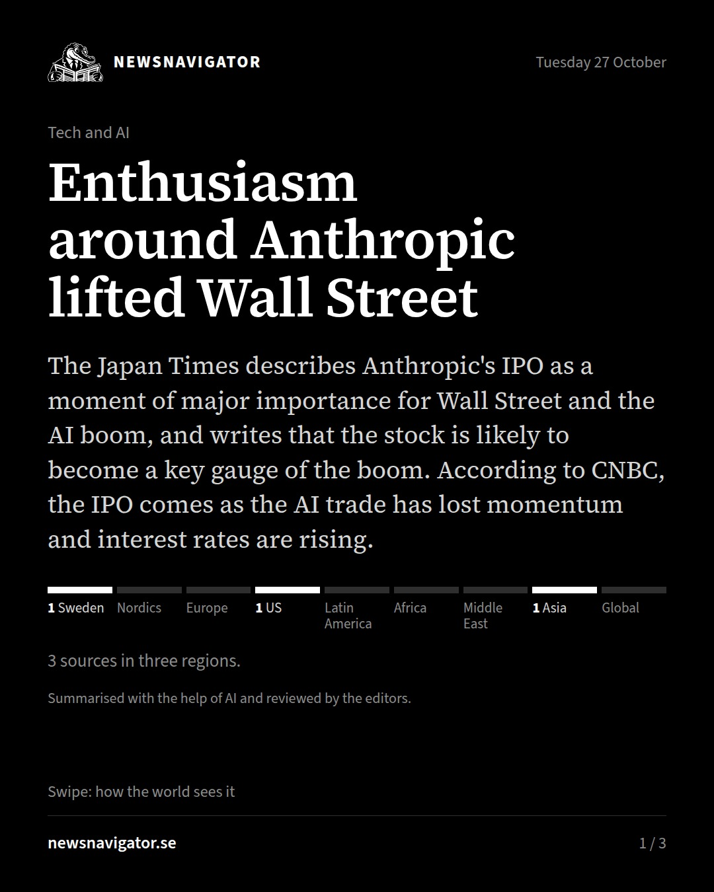
#53 · tech · 3 källor · 2026-10-27
Enthusiasm around Anthropic lifted Wall Street
The Japan Times describes Anthropic's IPO as a moment of major importance for Wall Street and the AI boom, and writes that the stock is likely to become a key gauge of the boom. According to CNBC, the IPO comes as the AI trade has lost momentum and interest rates are rising.
Caption
Enthusiasm around Anthropic lifted Wall Street
The Japan Times describes Anthropic's IPO as a moment of major importance for Wall Street and the AI boom, and writes that the stock is likely to become a key gauge of the boom. According to CNBC, the IPO comes as the AI trade has lost momentum and interest rates are rising.
How the world sees it: The Japan Times (Japan) and CNBC (USA) emphasize the IPO's significance for Wall Street and the AI industry going forward. CNBC also highlights that the AI trade has lost momentum and that interest rates are rising. Dagens industri (Sweden) emphasizes in its headline that enthusiasm around Anthropic has lifted Wall Street.
Sources differ: The sources do not disagree on facts, but on what they emphasize. The Japan Times and CNBC describe the IPO as something with future significance. Dagens industri reports in its headline a market movement that has already occurred. The material does not clearly show whether the IPO has taken place.
Sources: The Japan Times, CNBC, Dagens industri
Full story with all links: https://newsnavigator.se/en/n/a535201232/
Summarised with the help of AI and reviewed by the editors. We deliver the news. What you do with it is up to you.
#news #newsnavigator #tech #ai #context #sources
#54 · tech · 3 källor · 2026-10-27
Meta plans stock sale of up to $95 billion to fund AI push
According to CNBC and the Financial Times, Meta plans to raise $95 billion by issuing new stock to finance its AI infrastructure. According to CNBC, Nvidia, AMD and Broadcom are interested in shares worth up to $5 billion.
Caption
Meta plans stock sale of up to $95 billion to fund AI push
According to CNBC and the Financial Times, Meta plans to raise $95 billion by issuing new stock to finance its AI infrastructure. According to CNBC, Nvidia, AMD and Broadcom are interested in shares worth up to $5 billion.
How the world sees it: The German outlet The Decoder, the American outlet CNBC and the British Financial Times highlight different things. CNBC mentions the chipmakers Nvidia, AMD and Broadcom and superintelligence, while The Decoder and the Financial Times focus on financing the AI expansion.
Sources differ: The headlines differ in wording. CNBC says Meta announces a stock offering, while The Decoder and the Financial Times say Meta plans one. The Decoder gives the amount as up to $95 billion, while CNBC and the Financial Times give $95 billion.
Sources: The Decoder, CNBC, Financial Times
Full story with all links: https://newsnavigator.se/en/n/f4861b5add/
Summarised with the help of AI and reviewed by the editors. We deliver the news. What you do with it is up to you.
#news #newsnavigator #tech #ai #context #sources
#55 · noje · 3 källor · 2026-10-28
Noah Wyle named world's sexiest man by People
According to People magazine, actor Noah Wyle has been named the world's sexiest man of 2026. The magazine cites his captivating intensity and film-star looks, El País reports.
Caption
Noah Wyle named world's sexiest man by People
According to People magazine, actor Noah Wyle has been named the world's sexiest man of 2026. The magazine cites his captivating intensity and film-star looks, El País reports.
How the world sees it: Swedish headlines (Expressen and Aftonbladet) highlight only the designation. Spanish El País also highlights that Wyle stars in ‘The Pitt’ and has won two consecutive Emmys.
Sources: Expressen Nöje, El País América, Aftonbladet Nöjesbladet
Full story with all links: https://newsnavigator.se/en/n/257d15740e/
Summarised with the help of AI and reviewed by the editors. We deliver the news. What you do with it is up to you.
#news #newsnavigator #entertainment #gaming #culture #context #sources
#56 · noje · 3 källor · 2026-10-27
Walter Koenig, who played Chekov in Star Trek, has died
Actor Walter Koenig, known for playing Pavel Chekov in Star Trek, has died at age 90, according to Reuters via Daily Maverick. Swedish outlets Expressen and Aftonbladet also report the death.
Caption
Walter Koenig, who played Chekov in Star Trek, has died
Actor Walter Koenig, known for playing Pavel Chekov in Star Trek, has died at age 90, according to Reuters via Daily Maverick. Swedish outlets Expressen and Aftonbladet also report the death.
How the world sees it: Daily Maverick (South Africa) highlights the name and the role as Pavel Chekov in its headline. Expressen (Sweden) and Aftonbladet (Sweden) have short headlines that state the Star Trek star or actor has died, without naming him.
Sources: Daily Maverick, Expressen Nöje, Aftonbladet Nöjesbladet
Full story with all links: https://newsnavigator.se/en/n/d62924f55a/
Summarised with the help of AI and reviewed by the editors. We deliver the news. What you do with it is up to you.
#news #newsnavigator #entertainment #gaming #culture #context #sources